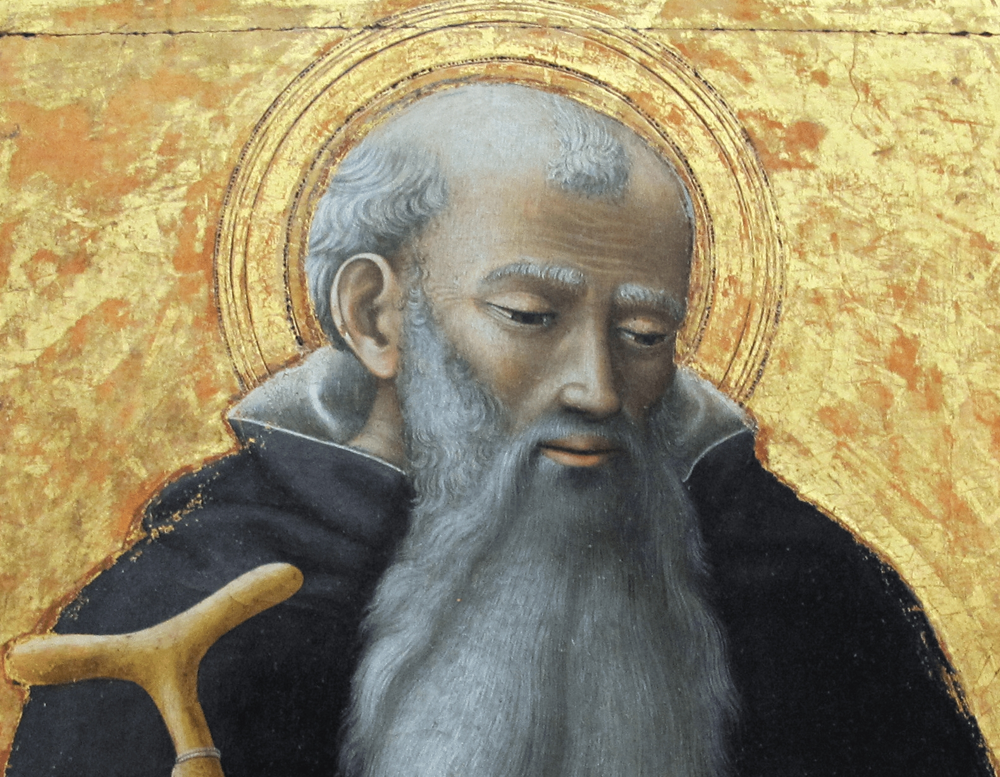

Avete intrapreso una nobile gara con i monaci dell’Egitto: o uguagliarli oppure superarli, praticando l’esercizio della virtù. Presso di voi ci sono già dei monasteri e la parola monaco è ormai diffusa. Perciò si loderà a giusta ragione il vostro modo di vivere e Dio, per le vostre preghiere, lo realizzerà in pieno. Poiché mi avete chiesto, desiderosi di apprendere la condotta di vita del beato Antonio, in che modo cominciò a porsi al servizio di Dio, chi era in precedenza, quale fine ebbe la sua esistenza, se rispondono a verità le cose che si dicono di lui, perché conquistati dal suo ardore possiate emulano, ho accettato con grande entusiasmo la vostra richiesta. Quanto a me, il solo fatto di ricordare Antonio sarà causa di grande giovamento. Sono sicuro che anche voi, ascoltando le mie parole, apprezzerete l’uomo e ne imiterete la condotta. La vita di Antonio, infatti, è per i monaci modello ideale per l’ascesi. Quelli che già vi hanno parlato della sua vita, vi hanno detto cose vere ma vi hanno riferito poco. Del resto non potevano dirvi tante e tante cose. Anch’io, cedendo alle vostre preghiere, non potrò dirvi, in questa lettera che vi sto scrivendo, se non una piccola parte di lui. Voi, da parte vostra, interrogate sempre coloro che vi raggiungeranno. Così se ognuno dirà di Antonio quanto conosce, ne verrà fuori una narrazione degna di lui e della sua vita. Quando ho ricevuto la vostra lettera, volevo chiamare presso di me alcuni di quei monaci che io frequentavano per potervi scrivere più diffusamente di lui. Ma, poiché si avvicinava il tempo della partenza della nave e il latore della presente mi sollecitava, mi sono affrettato ad affidare alla vostra pietà quanto io stesso so. Infatti l’ho visitato spesso e ho potuto apprendere da lui quando, per non poco tempo, l’ho frequentato e ho versato l’acqua nelle sue mani. Mi sono sempre preoccupato della verità considerando che, nel narrare di un così grande uomo, il molto potrebbe generare incredulità, il poco potrebbe indurre al disprezzo.
1. Antonio nacque in Egitto da genitori nobili, benestanti e di fede cristiana. Ricevette, perciò, un’educazione cristiana e con i propri cari trascorse l’infanzia; non conosceva altro se non i genitori e la casa. Quando crebbe e divenne ragazzo non volle dedicarsi agli studi delle lettere per non avere contatti con altri ragazzi. La sua aspirazione era una sola: vivere in casa in modo semplice, come si legge di Giacobbe (Gn 25,27). Con i genitori andava in chiesa, ma non si distraeva, come gli altri ragazzi, né crescendo, diventava sprezzante. Era sempre rispettoso verso i genitori (Lc 2,51-52) e, prestando attenzione alle letture, ne custodiva il frutto. Non infastidiva i genitori col chiedere, per le loro condizioni agiate, cibi più abbondanti e più succulenti. Insomma, non peccava di gola, si contentava di quanto trovava e non chiedeva mai il di più.
2. Dopo la morte dei genitori, Antonio rimase solo con una sorella molto più piccola. All’età di diciotto o vent’anni circa si prese cura della casa e della sorella. Non erano ancora trascorsi sei mesi dalla morte dei genitori quando, recandosi in chiesa come era sua abitudine, si mise a pensare fra sé agli apostoli che, dopo aver lasciato ogni cosa, seguirono il Salvatore (Mt 4,20), e agli altri uomini che, come narrano gli Atti (At 4,35), avevano venduto i loro beni e avevano portato il ricavato ai piedi degli apostoli perché fosse distribuito ai poveri, e quanto grande fosse la speranza riservata loro nei cieli. Mentre meditava queste cose, entrò in chiesa e capitò proprio in quel momento in cui si leggeva il brano del vangelo in cui il Signore dice al ricco (Mt 19,21): «Se vuoi essere perfetto, va’, vendi quello che possiedi, dallo ai poveri, e avrai un tesoro nei cieli; poi vieni e seguimi». Antonio, come se il ricordo dei santi fosse dovuto a divina ispirazione e quella lettura fosse stata fatta proprio per lui, uscì subito dalla chiesa, donò ai vicini i poderi avuti in eredità dai genitori (trecento arure di terreno fertile e ben coltivato) perché non infastidissero più lui, né la sorella. Poi vendette gli altri beni mobili e distribuì ai poveri il ricavato che era notevole, trattenendo soltanto una modesta quota per la sorella.
3. Entrato nuovamente in chiesa, ascoltò il Signore che dice nel vangelo (Mt 6,34): «Non affannatevi per il domani». Non riuscì a fermarsi in chiesa, ne uscì subito e donò ai poveri quanto ancora gli era rimasto. Affidò la sorella a delle vergini che conosceva, perché la educassero nella verginità; egli stesso, poi, fuori della sua casa, si dedicò all’ascesi, vivendo molto austeramente. In quell’epoca in Egitto non erano ancora numerosi i monasteri e i monaci non avevano perciò esperienza della solitudine del deserto. Infatti chi voleva attendere a se stesso, praticava l’ascesi da solo non lontano dal proprio villaggio. C’era allora in un vicino villaggio un vecchio che dalla giovinezza si era votato alla vita ascetica. Antonio lo vide e volle emularlo nel bene. Dapprima cominciò anch’egli a vivere in luoghi fuori del villaggio. E di là, se veniva a sapere di qualcuno che con amore praticava l’ascesi, andava a trovarlo, come l’ape saggia, e non faceva ritorno se non dopo averlo visitato e ricevuto da lui quasi un viatico per il cammino della virtù. Con questi inizi giunse a tal punto da fortificare la sua mente da non ricordare più né i beni familiari, né i congiunti; indirizzò tutti i suoi propositi e la sua mente solo alla perfezione dell’ascesi. Lavorava con le proprie mani perché aveva udito che l’ozioso non deve neppure mangiare (2Ts 3,10). Col suo lavoro non solo si comprava il pane ma faceva anche elemosina ai poveri. Pregava continuamente. Aveva infatti imparato che bisogna pregare senza interruzione (Mt 6,6). Era così attento alla lettura delle Scritture che nulla gli sfuggiva. Ricordava tutto; al posto dei libri aveva la memoria.
4. Vivendo in tal modo, Antonio era amato da tutti. Si mostrava volentieri sottomesso agli uomini zelanti che visitava, faceva tesoro per sé di come ciascuno eccellesse per virtù e pratica ascetica. Di uno, infatti, ammirava la grazia, di un altro l’assiduità nel pregare; di uno apprezzava le veglie, di un altro l’amore per le letture; di uno la perseveranza, di un altro il digiuno e il dormire in terra, di uno la mitezza, di un altro la generosità. Di tutti notava l’amore per il Cristo e l’amore reciproco. E così spiritualmente arricchitosi, faceva ritorno al luogo della sua vita ascetica e, raccogliendo nel suo animo le virtù di ognuno, si sforzava di realizzarle tutte in se stesso. Non gareggiava con i suoi coetanei se non per apparire secondo nella pratica del bene. E faceva questo senza urtare nessuno, ma in modo che anche gli altri ne gioissero. Così tutti gli abitanti del villaggio e i buoni, con i quali aveva rapporti, lo chiamavano amico di Dio (cf. Is 41,8); alcuni lo amavano come un figlio, altri come un fratello.
5. Ma il diavolo, nemico di ogni bene e invidioso, non tollerò di vedere in un giovane simili propositi. Cominciò allora a mettere in pratica quelle cose che già prima aveva tentato. Dapprima cercò di allontanarlo dalla vita ascetica, ispirandogli il ricordo delle sue proprietà, la cura per la sorella, l’affetto per i congiunti, l’amore per il danaro e la famiglia, il piacere di cibi vari e raffinati e altre dolcezze della vita e infine l’asprezza della virtù che esige grandi fatiche; gli faceva anche presente la debolezza del corpo e la lunghezza del tempo. Insomma, gli suscitò nella mente una tempesta di pensieri per distrarlo dalla via del bene sulla quale si era incamminato. Ma il nemico, quando si vide impotente davanti alla fermezza di Antonio, anzi sconfitto dalla sua grande fede e dalle sue continue preghiere, allora, confidando nelle armi che sono «nei muscoli del ventre» (cf. Gb 40,16) e vantandosi di queste – che infatti sono le principali insidie contro i giovani – avanza contro il giovane turbandolo giorno e notte in modo che tutti coloro che lo vedevano si accorgevano della lotta fra i due. Quello gli suggeriva pensieri osceni, egli li metteva in fuga con la preghiera; quello lo solleticava, ma egli, provando vergogna, fortificava il suo corpo con la fede, con le preghiere, con il digiuno. Lo sciagurato diavolo osava anche assumere di notte l’aspetto di donna e di imitarla in tutti i modi pur di sedurre Antonio. Ma egli, pensando a Cristo e meditando sulla nobiltà e sulla spiritualità dell’anima che da lui l’uomo riceve, spegneva i carboni della seduzione. E di nuovo il nemico gli poneva davanti la dolcezza del piacere ma egli, simile a uomo adirato e afflitto, pensava alle minacce del fuoco e al tormento del verme (Gdt 16,17; Mc 9,43) e così passava oltre, illeso. E tutte queste cose accadevano a vergogna del nemico. Lui, il diavolo, che credeva di essere simile a Dio, era schernito da un giovane; lui che si gloriava della carne e del sangue, era sconfitto da un uomo fatto di carne. In aiuto di Antonio c’era il Signore che per noi si fece carne e concesse al corpo la vittoria contro il diavolo in modo che ognuno che combatte possa dire: «Non io, ma la grazia di Dio che è con me» (1Cor 15,10).
6. Alla fine il serpente non potendo far cadere Antonio così e vedendosi anzi respinto dal suo cuore, digrignando i denti, secondo le Scritture (Sal 111,10), e adirandosi, apparve ad Antonio sotto le sembianze di un fanciullo negro, così come era nero nell’animo. L’ingannatore non lo aggrediva più con i pensieri, giacché era stato respinto, ma con voce umana cominciò a parlargli: «Molti ho sedotto, moltissimi ho fatto cadere; ora, invece, dopo aver attaccato te e i tuoi sforzi, come ho fatto con altri, sono stato prostrato». Allora Antonio gli domandò: «Chi sei tu, che mi parli così?». E quello con voce lamentosa: «Sono l’amico della fornicazione; mi occupo di tendere insidie ai giovani, di spingerli a fornicare. Sono chiamato spirito della fornicazione. Quanti non ho ingannati che pur volevano vivere castamente! Quanti non ho indotto a cambiar vita con le mie seduzioni! Io sono colui per causa del quale il profeta rimprovera coloro che sono caduti “perché uno spirito di prostituzione li svia” (Os 4,12). Per causa mia, infatti, quelli sono caduti. Io sono colui che spesso ti ha arrecato molestie e che tu tante volte hai respinto». Allora Antonio ringraziò il Signore e, dopo aver preso coraggio contro il nemico, gli disse: «Perciò tu sei troppo spregevole. Sei nero nell’animo e nell’aspetto, come un fanciullo debole. D’ora in poi non mi curerò di te: il Signore è con me, è mio aiuto, sfiderò i miei nemici» (Sal 117,7). Udito ciò, quell’essere negro subito fuggi, spaventato da quelle parole; aveva paura anche di avvicinarsi soltanto ad Antonio.
7. Questa fu la prima vittoria di Antonio contro il diavolo, anzi la vittoria che il Salvatore realizzò in Antonio, egli che «ha condannato il peccato nella carne, perché la giustizia della legge si adempisse in noi, che non camminiamo secondo la carne ma secondo lo Spirito» (Rm 8,3-4). Tuttavia Antonio, dopo aver vinto il diavolo, non visse in seguito negligentemente, senza prendersi cura di sé; né, d’altra parte, il nemico, sebbene sconfitto, cessò d’insidiarlo. Come un leone egli andava intorno cercando l’occasione propizia contro di lui. Ma Antonio che aveva appreso dalle Scritture (Ef 6,11) che molte sono le insidie del nemico, praticava l’ascesi con maggiore impegno, pensando che il diavolo, se non era riuscito ad ingannare il suo cuore col piacere del corpo, gli avrebbe teso inganni con altri mezzi. Il diavolo, infatti, è amico del peccato. Perciò egli macerava sempre di più il suo corpo e lo teneva in schiavitù perché, vincitore in alcune cose, non finisse poi vinto in altre. Prese dunque la decisione di abituarsi a un tenore di vita più severo e molti lo ammiravano. Sopportava facilmente ogni prova; col passare del tempo lo zelo della sua anima generava in lui migliore disposizione e, se riceveva un’ispirazione anche piccola dagli altri, mostrava grande entusiasmo nel metterla in pratica. Vegliava tanto da stare spesso sveglio l’intera notte; e faceva questo non solo una volta ma spesso, destando perciò ammirazione. Mangiava una sola volta al giorno dopo il tramonto del sole, e qualche volta dopo due giorni e spesso anche dopo quattro. Si cibava di pane e di sale e beveva solo acqua. Di carne e di vino è superfluo parlare perché neppure presso gli altri asceti si trovano cose del genere. Per il sonno gli bastava una stuoia, ma molte volte dormiva per terra. Non voleva ungersi con olio perché diceva che ai giovani si addice soprattutto la pratica seria dell’ascesi e quindi non si devono cercare le cose che fiaccano il corpo, bisogna invece abituarsi alle fatiche, memori delle parole dell’apostolo: «quando sono debole, è allora che sono forte» (2Cor 12,10). Diceva infatti che l’animo si rinvigorisce quando sono mortificati i piaceri del corpo. Aveva anche questo pensiero degno di ammirazione: non era giunto a misurare la via della virtù, né il suo ritiro dal mondo col tempo trascorso, ma con desideri e propositi buoni. Egli stesso non ricordava mai il tempo passato ma considerava ogni giorno come l’inizio della sua ascesi e si impegnava a perfezionarla, ripetendo spesso il detto di Paolo: «dimentico del passato e proteso verso il futuro» (Fil 3,13). Ricordava anche le parole del profeta Elia: «Per la vita del Signore degli eserciti, alla cui presenza io sto, oggi stesso io mi mostrerò a lui» (1Re 18,15). Considerava infatti che, il profeta nel dire «oggi», non teneva conto del tempo trascorso, ma, quasi stabilendo un nuovo inizio, si preoccupava ogni giorno di presentarsi a Dio così come si deve apparire, puro di cuore, disposto all’obbedienza della sua volontà e non di altri. Diceva tra sé che l’asceta deve contemplare la propria vita come in uno specchio, considerando quella del grande Elia.
8. Temprandosi in questo modo, Antonio andò fra i sepolcri che si trovavano lontano dal villaggio e diede incarico a uno dei suoi conoscenti di portargli del pane per molti giorni. Entrato in uno di questi sepolcri, si fece chiudere la porta e vi rimase dentro da solo. Ma il nemico non sopportando ciò, anzi temendo che in poco tempo avrebbe riempito il deserto della sua pratica ascetica, si presentò una notte con una schiera di demoni e lo percosse tanto che egli giacque a terra, muto per le sofferenze. Narrò poi che il dolore era stato così forte che colpi inflitti dagli uomini non avrebbero potuto mai procurargli un simile tormento. Ma per la provvidenza divina (il Signore infatti non trascura quelli che sperano in lui) il giorno successivo venne quel suo conoscente a portargli del pane; aprì la porta e, vedendolo disteso per terra come un morto, se lo caricò sulle spalle e lo portò alla chiesa del villaggio, deponendolo per terra. Molti suoi parenti e gli abitanti del villaggio stavano intorno ad Antonio come intorno ad un morto. Verso mezzanotte Antonio si riprese e, destatosi, vide che tutti dormivano e solo quel suo conoscente era sveglio. Con un cenno lo fece avvicinare a lui, lo pregò di caricarlo nuovamente sulle sue spalle e di riportarlo al sepolcro senza svegliare nessuno.
9. Condotto via da quell’uomo e chiusa la porta, secondo il suo solito, era di nuovo solo nel sepolcro. Non avendo la forza di reggersi in piedi per le percosse ricevute, si mise a pregare giacendo per terra. Dopo la preghiera diceva ad alta voce: «Ecco, sono qui, io Antonio; non fuggo le vostre percosse, e anche se me ne darete ancora, nulla mi dividerà dall’amore per Cristo» (Rm 8,35). Poi si mise a cantare il salmo: «Se contro di me si accampa un esercito, il mio cuore non teme» (Sal 26,3). L’asceta, dunque, pensava e diceva queste cose. Ma il nemico, che odia ogni bene, meravigliatosi perché Antonio dopo tante percosse ricevute aveva osato far ritorno, fatti venire i suoi cani, e pieno di rabbia, disse: «Voi vedete che né con lo spirito della fornicazione, né con le percosse, siamo riusciti a piegare costui; anzi egli ci sfida con audacia. Aggrediamolo in altro modo». Per fare il male, infatti, il diavolo può assumere varie forme. Allora, dunque, in quella notte i demoni fecero tanto rumore che tutto il luogo sembrava scosso e, come se essi stessi avessero abbattuto le quattro pareti del sepolcro, parvero penetrare attraverso le mura assumendo l’aspetto di fiere e di rettili. In breve tempo tutto il luogo fu pieno di fantasmi di leoni, di orsi, di leopardi, di tori, di serpenti, di aspidi, di scorpioni, di lupi. Ognuno di essi si comportava secondo la figura che aveva assunto. Il leone ruggiva, pronto ad aggredirlo, il toro sembrava colpirlo con le corna, il serpente strisciando non riusciva a prenderlo, il lupo era trattenuto mentre tentava di assalirlo. Lo strepito di tutte quelle fiere che apparivano era terribile, come terribile era il loro aspetto. Ma Antonio, colpito e pungolato da quelli, avvertiva anche più forte il dolore del suo corpo; tuttavia giaceva impavido e sveglio. Gemeva per le sofferenze del corpo, ma lucido nella mente, quasi schernendoli, diceva loro: «Se voi aveste qualche potere, sarebbe bastato che uno solo di voi venisse. Ma poiché il Signore vi ha tolto la forza, voi per questo cercate di spaventarmi col numero. Segno della vostra debolezza è il fatto che voi imitate le forme dei bruti». E ancora pieno di fiducia aggiungeva: «Se avete forza, se avete ricevuto qualche potere contro di me, non esitate, ma aggreditemi. E se non potete, perché vi agitate inutilmente? Per noi è sigillo e muro di difesa la fede nel nostro Signore». Dopo molti tentativi quelli digrignavano i denti contro di lui, ma schernivano più se stessi che Antonio.
10. Ma il Signore neppure allora si dimenticò della lotta affrontata da Antonio e gli venne in aiuto. Alzati gli occhi in alto, vide il tetto quasi aperto e un raggio di luce scendere fino a lui. I demoni tosto scomparvero, il dolore del corpo cessò e la casa apparve di nuovo intatta. Antonio si accorse dell’aiuto, trasse un lungo respiro e, liberato dai dolori, interrogò la visione apparsagli con queste parole: «Dove eri? Perché non sei apparsa fin dall’inizio per liberarmi dalle sofferenze?». E una voce giunse fino a lui: «Io ero qui, o Antonio, ma aspettavo per vedere la tua lotta. Poiché l’hai affrontata e non sei stato vinto, io sarò sempre il tuo aiuto e ti renderò famoso in ogni luogo». Dopo aver sentito queste parole, si alzò e pregò e acquistò tanta forza da avvertire di avere nel corpo maggior vigore di quanto ne avesse posseduto prima. Aveva allora trentacinque anni.
11. Il giorno seguente uscì, con l’animo più ardente di amore per Dio, e si recò da quel vecchio prima ricordato e lo pregò di abitare insieme con lui nel deserto. Il vecchio rispose di no a causa dell’età e anche perché fino a quel tempo non c’era stata questa consuetudine. Allora Antonio si recò solo verso il monte. Ma il nemico, vedendo di nuovo il suo zelo e volendolo ostacolare, fece apparire sulla strada l’immagine di un grande vaso d’argento. Antonio, avendo capito l’arte di colui che odia il bene, si fermò, guardò nel vaso e rimproverò il diavolo che era dentro con queste parole: «Da dove viene questo vaso nel deserto? Questa via non è percorsa, né ci sono tracce di viandanti e poi è così grande che, cadendo, non poteva non essere visto. Se qualcuno l’avesse perduto, sarebbe tornato indietro a cercarlo e l’avrebbe trovato in un luogo tanto deserto. Ma questa è arte del diavolo; ma neppure ora, o diavolo, tu ostacolerai il mio proposito. Questo vaso, infatti, “vada con te in perdizione”» (At 8,20). Mentre Antonio così parlava, il vaso si dileguò come fumo davanti al fuoco.
12. Un’altra volta, mentre camminava, vide dell’oro vero e non un’immagine, gettato in mezzo alla strada. O l’aveva posto il nemico oppure qualche potenza superiore voleva mettere alla prova l’atleta dimostrando al diavolo che Antonio non si preoccupava nemmeno delle ricchezze reali. Egli non rivelò mai il luogo, né noi lo conosciamo; sappiamo solamente che l’oro che gli era apparso era vero. Antonio si meravigliò della quantità e, passando oltre come se si trattasse di una fiamma, andò via senza volgere lo sguardo. Corse con tanta rapidità fino a che il luogo sfuggisse ai suoi occhi. Confermato sempre di più nel suo intento, Antonio si diresse verso il monte. Al di là del fiume trovò un fortino abbandonato da molto tempo e pieno di serpenti. Si trasferì lì e vi rimase. I serpenti, come se fossero stati inseguiti da qualcuno, subito si dileguarono. Antonio portò dentro dei pani per sei mesi (i tebani hanno l’abitudine di fare il pane per un anno senza che si guasti) e poi chiuse l’ingresso. Dentro trovò pure dell’acqua. Vi rimase solo, come rinchiuso in un sotterraneo, senza mai uscir fuori per vedere se vi arrivasse qualcuno. Così per molto tempo condusse questa vita ascetica; riceveva soltanto due volte all’anno il pane attraverso il tetto.
13. I conoscenti che andavano a fargli visita, siccome egli non li lasciava entrare, spesso rimanevano fuori per notti e giorni interi. Udivano dentro come di folla che tumultuava e strepitava e poi grida lamentose che dicevano: «Allontanati dai nostri luoghi. Che cosa ci fai nel deserto? Non riuscirai a sopportare le nostre insidie». Dapprima quelli che stavano fuori credevano che dentro ci fossero degli uomini che litigavano con lui e che si erano introdotti con delle scale. Ma poi attraverso un foro quando videro che non c’era nessuno, capirono che erano i demoni e atterriti si misero a chiamare Antonio. E questi, non curandosi dei demoni, si avvicinò alla porta ed esortò quelle persone ad andare via e a non temere. Diceva che i demoni foggiano immagini simili contro coloro che hanno paura. «Voi, diceva, fatevi il segno di croce, andate via con fiducia e lasciate che i demoni si burlino di se stessi». E quelli, dopo essersi segnati con la croce, si allontanarono. Egli rimase senza ricevere alcun danno da parte dei demoni e senza essere stanco di lottare. L’apparizione di celesti visioni e l’impotenza dei nemici gli procuravano grande sollievo nelle fatiche e accrescevano il suo coraggio. I conoscenti che spesso andavano a visitarlo, credevano di trovano morto e invece lo sentivano cantare il salmo: «Sorga Dio, i suoi nemici si disperdano e fuggano davanti a lui quelli che lo odiano. Come si disperde il fumo, tu li disperdi; come fonde la cera di fronte al fuoco, periscano gli empi davanti a Dio» (Sal 67,2-3). Ed ancora: «Tutti i popoli mi hanno circondato, ma nel nome del Signore li ho sconfitti» (Sal 117,10).
14. Visse così quasi vent’anni, conducendo da solo questa vita ascetica, senza mai uscire, senza mai farsi vedere da qualcuno. Poi, molti che desideravano imitare la sua condotta ascetica, e altri suoi conoscenti, si recarono da lui. Abbatterono con forza la porta ed Antonio andò loro incontro come un iniziato esce da un recesso, ispirato da Dio. Allora, quelli che erano andati da lui per la prima volta, lo videro fuori del fortino. Si stupirono nel vedere che il suo fisico era sempre lo stesso, non ingrassato né dimagrito per i digiuni e le lotte con i demoni. Era, insomma, come l’avevano visto prima del ritiro dal mondo. Il suo spirito era puro; non appariva né triste né gioioso, non era scosso né dal riso né dalla mestizia, neppure si turbò davanti a tanta folla, né fu visto gioire perché era salutato da tante persone. Rimase sempre padrone di sé; si lasciava guidare dalla ragione, sempre con animo pieno di equilibrio. Molti dei presenti, che erano ammalati, furono guariti dal Signore per mezzo di lui, altri furono liberati dai demoni. Il Signore diede ad Antonio il dono della parola e così egli poté confortare molti che erano tristi, riconciliò altri che erano in lite, esortò tutti a non anteporre all’amore per Cristo nessuna delle cose della terra. Parlando, ricordava i beni futuri e l’amore che Dio ha per noi: «Egli che non ha risparmiato il proprio Figlio, ma lo ha dato per tutti noi» (Rm 8,32). Persuase molti a scegliere la vita solitaria. Sorsero così sui monti i monasteri e il deserto fu abitato dai monaci che abbandonavano le proprie cose e si iscrivevano a questa celeste istituzione.
15. Quando dovette attraversare il canale della città di Arsinoe perché aveva necessità di visitare i suoi confratelli, quel canale era pieno di coccodrilli. Egli, dopo aver soltanto pregato, s’immerse nell’acqua insieme con quanti lo accompagnavano, e passò oltre illeso. Ritornato alla sua dimora, riprese le sue sante e giovanili fatiche. Parlando spesso, accresceva lo zelo di coloro che erano già monaci, infiammava molti altri all’amore per la vita ascetica. In poco tempo, per le sue esortazioni, sorsero moltissimi monasteri ed egli, come un padre, presiedeva a tutti.
16. Un giorno, mentre usciva, tutti i monaci gli si fecero incontro e lo pregarono di tenere un discorso. Ed egli così parlò loro in lingua egiziana: «Le Scritture sono sufficienti all’insegnamento; ma è bene che noi a vicenda ci esortiamo nella fede e ci incitiamo con i discorsi. Voi, come figli, riferite a me, come a un padre, le cose che sapete. E io, essendo più anziano di voi, vi riferirò quello che so e che ho sperimentato. Sia questa la comune aspirazione di tutti: non retrocediamo dopo aver cominciato, non scoraggiamoci nelle fatiche, non diciamo mai “abbiamo praticato per molto tempo l’ascesi”. Piuttosto accresciamo lo zelo come se incominciassimo ogni giorno. Di fronte ai secoli futuri la vita umana è brevissima; tutto il nostro tempo è nulla rispetto alla vita eterna. In questo modo ogni cosa si vende al giusto prezzo e lo scambio avviene sempre con cose di ugual valore; ma la promessa della vita eterna si compra a basso prezzo. Infatti sta scritto: “Gli anni della nostra vita sono settanta, ottanta per i più robusti; ma quasi tutti sono fatica, dolore” (Sal 89,10). Se perseveriamo per tutti gli ottanta anni oppure per cento nella pratica ascetica, non regneremo soltanto per cento anni ma regneremo nei secoli dei secoli. Se lotteremo sulla terra, non avremo eredità sulla terra ma la promessa nei cieli. Quando deporremo il corpo corruttibile, ne riceveremo uno incorruttibile» (1Cor 15,42).
17. «Perciò, o figli, non ci scoraggiamo, non crediamo di durare a lungo o di fare qualcosa di grande: “Le sofferenze del momento presente non sono paragonabili alla gloria futura che dovrà essere rivelata in noi” (Rm 8,18). Né guardando l’universo dobbiamo credere di aver rinunciato a grandi cose; tutta la terra, paragonata a tutto il cielo, è piccolissima. Se noi fossimo padroni di tutta la terra e rinunciassimo ad essa, nulla di quello a cui abbiamo rinunciato sarebbe degno del regno dei cieli. Come uno disprezza una dracma di bronzo per guadagnare cento dracme d’oro, così chi è padrone di tutta la terra e rinuncia ad essa, perde poco ma fa un guadagno cento volte maggiore. Se tutta la terra non è degna del regno dei cieli, chi perde poche arure, non perde quasi niente; se poi lascia la casa e molto oro, non deve vantarsi né scoraggiarsi. Dobbiamo anche tener presente che se non lasciamo le nostre cose in nome della virtù, le lasceremo in seguito quando moriremo e spesso a persone alle quali non vorremmo lasciarle, come ricorda l’Ecclesiaste (Qo 4,8). Perché, dunque, non lasciarle in nome della virtù per ereditare il regno dei cieli? Per questo nessuno di noi si lasci prendere dalla cupidigia di possedere. Che guadagno c’è a possedere cose che non possiamo portarci con noi? Perché non ci preoccupiamo di acquistare cose che possiamo portar via con noi come la prudenza, la giustizia, il coraggio, l’intelletto, la carità, l’amore verso i poveri, la fede in Cristo, la mansuetudine, l’ospitalità? Se acquisteremo queste cose, le troveremo là dove ci accoglieranno come ospiti nella terra dei miti».
18. «Per queste ragioni ciascuno di voi si convinca di non perdersi d’animo, specialmente se pensa di essere il servo del Signore e di doverlo servire. Come un servo non osi dire: “Siccome ieri ho lavorato, oggi non lavoro”, né calcolando il tempo trascorso, si riposerà nei giorni successivi. Ma ogni giorno, come è scritto nel vangelo (Lc 17,7-10), mostri lo stesso zelo per piacere al Signore e non essere in pericolo. Così noi, ogni giorno, dobbiamo perseverare nella pratica ascetica sapendo che se anche per un solo giorno la trascureremo, il Signore non ci perdonerà a causa del tempo passato ma, per la nostra negligenza, si mostrerà contrariato nei nostri confronti. Così è scritto in Ezechiele (Ez 18,24-26); così anche Giuda per una sola notte perdette la fatica del tempo trascorso» (Gv 13,30).
19. «Dedichiamoci, o figli, alla pratica ascetica e non siamo negligenti. Abbiamo in questo il Signore come aiuto perché “tutto concorre al bene di coloro che amano Dio” (Rm 8,28). Per non essere negligenti, ci conviene meditare sulle parole dell’Apostolo: “Ogni giorno io affronto la morte (1Cor 15,31). Se vivremo, come se dovessimo morire ogni giorno, non peccheremo. Il che significa che quando ogni giorno ci alziamo, non dobbiamo credere che vivremo fino alla sera e quando andiamo a letto non dobbiamo credere di alzarci. La nostra vita, per natura, è incerta e ogni giorno viene misurata dalla Provvidenza. Se ci disporremo così e se così ogni giorno vivremo, non peccheremo, né saremo presi dalla cupidigia di qualcosa. Con nessuno ci adireremo, non accumuleremo tesori sulla terra, ma ogni giorno, aspettando la morte, non possederemo niente e a tutti perdoneremo qualsiasi cosa. Non avremo concupiscenza di donna, né saremo dominati da piaceri osceni che anzi avverseremo come cose caduche, sempre lottando e avendo davanti agli occhi il giorno del giudizio. Infatti il timore grandissimo e il pericolo dei tormenti dissolvono sempre le lusinghe del piacere e rinsaldano l’anima che vacilla».
20. «Dunque, cominciamo e, presa la strada della virtù, protendiamoci sempre di più per raggiungere la meta (Fil 3,13). Nessuno si volga indietro, come la moglie di Lot (Gn 19,26), soprattutto perché il Signore ha detto: “Nessuno che ha messo mano all’aratro e poi si volge indietro, è adatto per il regno dei cieli” (Lc 9,62). Guardare indietro altro non vuoi dire che cambiare idea e pensare di nuovo alle cose del mondo. Sentendo parlare della virtù, non abbiate paura, né dovete temere il nome. Non è infatti lontana da noi, né si trova fuori di noi; l’opera è in noi stessi ed è facile realizzarla solo se noi vogliamo. I greci viaggiano, attraverso il mare, per apprendere le lettere; noi non abbiamo bisogno di muoverci per il regno dei cieli, né di attraversare il mare per la virtù. Il Signore ci ha già detto: “Il regno di Dio è in mezzo a voi!” (Lc 17,21). La virtù perciò ha bisogno soltanto della nostra volontà, dal momento che è in noi e da noi trae la sua origine. Infatti quella parte dell’anima che per natura è intelligente, è virtù e conserva la sua natura quando rimane così come è stata creata, cioè buona e retta. Per questo Giosuè, figlio di Nun, ammaestrando il popolo diceva: “Rivolgete il cuore verso il Signore, Dio d’Israele” (Gs 24,23) e Giovanni Battista: “Raddrizzate i suoi sentieri” (Mt 3,3). Quando l’anima è retta, la sua razionalità è come fu creata; se invece l’anima declina e svia dalla sua natura, allora si dice che l’anima è corrotta. Non si tratta di cosa difficile: se noi rimaniamo come siamo stati creati, saremo virtuosi, se invece ci abbandoniamo al male, saremo giudicati come cattivi. Se dovessimo uscire fuori di noi per conquistare la virtù, le difficoltà non mancherebbero. Ma poiché essa è in noi, guardiamoci dai cattivi pensieri e custodiamo l’anima che il Signore ci ha dato come in deposito affinché, rimanendo essa nello stato in cui l’ha foggiata, egli riconosca in noi la sua opera».
21. «Il nostro impegno sia quello di non essere schiavi dell’ira, di non essere posseduti dalla concupiscenza. Infatti è scritto: “L’ira dell’uomo non compie ciò che è giusto davanti a Dio” (Gc 1,20) e: “La concupiscenza concepisce e genera il peccato, e il peccato, quand’è consumato, produce la morte” (Gc 1,15). Scelto questo metodo di vita, dobbiamo vivere molto sobriamente. È scritto infatti: “Con ogni cura vigila sui cuore” (Pro 4,23). Abbiamo dei nemici terribili e astuti, i malvagi demoni e noi dobbiamo combattere, come dice l’Apostolo: “non contro creature fatte di sangue e di carne, ma contro i principati e le potestà, contro i dominatori di questo mondo di tenebra, contro gli spiriti del male che abitano nelle regioni celesti” (Ef 6,12). Grande è il loro numero nell’aria che è intorno a noi ed essi non sono lontani da noi, e inoltre molte sono le loro varietà. Sulle loro proprietà e varietà si potrebbero dire molte cose; ma è un discorso che riserviamo a persone più grandi di noi. A noi ora interessa conoscere le astuzie che essi mettono in pratica contro di noi».
22. «Innanzitutto dobbiamo sapere che quelli che noi chiamiamo demoni non furono creati tali: Dio non ha fatto nulla di male. Anch’essi sono stati creati buoni, ma si staccarono dalla sapienza celeste, caddero poi sulla terra e ingannarono i pagani con le loro immagini. Sono invidiosi di noi cristiani e cercano con ogni mezzo di impedire la nostra ascesa verso il cielo da dove essi sono precipitati. Necessita quindi la continua preghiera, occorre la pratica ascetica perché chi riceve attraverso lo Spirito Santo la grazia di distinguere gli spiriti possa conoscere le cose che riguardano i demoni: quali sono meno malvagi, quali più malvagi, quali le loro consuetudini e attività, come possono essere respinti e cacciati via. Molti sono infatti i loro inganni e molti anche i loro movimenti per tendere insidie. Perciò il santo Apostolo e quelli che con lui conoscevano i demoni dicevano: “Non ignoriamo le macchinazioni” (2Cor 2,11). E noi che ne abbiamo fatto esperienza, dobbiamo a vicenda ammonirci. Io che poi ne ho fatta una certa esperienza, parlo a voi come a dei figli».
23. «Costoro, quando vedono che tutti i cristiani e soprattutto i monaci sono zelanti e progrediscono, in primo luogo tentano l’aggressione e pongono agguati lungo la strada (Sal 139,6). Perciò noi non dobbiamo lasciarci spaventare dalle loro suggestioni: con le preghiere, con i digiuni, con la fede nel Signore, essi subito cadono. Ma anche caduti, essi non si arrendono; subito si avvicinano nuovamente con astuzia e con inganno. Infatti non potendo apertamente ingannare il cuore con il piacere osceno, cercano altri mezzi, tentano di far paura con vane immagini, assumendo forme di donne, di belve, di rettili, di grandi corpi, di schiere di soldati. Ma neppure queste immagini si devono temere. Esse sono il nulla e quindi presto si dileguano, soprattutto se noi ci fortifichiamo con la fede e il segno di croce. I demoni sono audaci e molto impudenti: se sono sconfitti in un modo, aggrediscono ancora in un altro modo. Simulano di essere esperti di vaticinio e di predire il futuro, si mostrano molto alti per raggiungere i tetti, si estendono in larghezza per sedurre con questi aspetti coloro che essi non sono riusciti a ingannare con i pensieri. Se poi trovano un’anima salda nella fede e nella speranza della conversione, allora fanno venire il loro capo».
24. «Essi appaiono come il Signore rivelò il diavolo a Giobbe dicendo: “I suoi occhi sono come le palpebre dell’aurora. Dalla sua bocca partono vampate, sprizzano scintille di fuoco. Dalle sue narici esce fumo come da caldaia, che bolle sul fuoco. Il suo fiato incendia carboni e dalla bocca gli escono fiamme” (Gb 41,10-13). Il capo dei demoni, mostrandosi in questo modo, atterrisce, come ho detto prima. Quello scaltro si vanta pronunciando grosse parole, come il Signore dimostrò a Giobbe: “Stima il ferro come paglia, il bronzo come legno tarlato. Fa ribollire come pentola il gorgo, fa del mare come un vaso da unguenti. Dietro a sé produce una bianca scia e l’abisso appare canuto” (Gb 41,19.23-24); e ancora per mezzo del profeta: “Il nemico aveva detto: Inseguirò, raggiungerò” (Es 15,9) e poi: “La mia mano, come in un nido, ha scovato la ricchezza dei popoli. Come si raccolgono le uova abbandonate, così ho raccolto tutta la terra” (Is 10,14). Di simili cose si vantano e promettono di farle con lo scopo di sedurre quanti adorano Dio. Ma occorre che noi che abbiamo fede non temiamo le apparizioni del diavolo, né prestiamo fede alle sue voci. Egli infatti mente e non dice alcuna cosa vera. Mentre egli dice tante e tante cose con audacia, viene trascinato dal Salvatore come un serpente all’amo, come un animale che riceve la cavezza alle narici; come un fuggiasco ha il naso legato a un anello, ha le labbra trafitte da uno spiedo (Gb 40,24-26). È legato dal Signore come un passero perché sia schernito da noi (Gb 40,29). Sia il diavolo che i demoni che sono con lui sono stati posti come scorpioni e serpenti per essere calpestati da noi cristiani (Lc 10,19). Infatti chi ha minacciato di essiccare il mare e di impadronirsi del mondo, ecco che ora non può impedire la vostra pratica ascetica, né me che parlo contro di lui. Non ascoltiamo le cose che dice, egli mente, non temiamo le sue apparizioni perché anch’esse sono false. Non è luce vera quella che appare in loro; portano soltanto un anticipo e un’immagine del fuoco preparato per loro. Con le fiamme con le quali bruceranno, essi cercano di intimorire gli uomini. In realtà appaiono ma subito scompaiono, non danneggiano nessuno dei fedeli, portano essi stessi un’immagine del fuoco dal quale saranno accolti. Neppure per questo devono essere temuti. Tutti i loro tentativi per la grazia di Cristo sono resi vani».
25. «Sono astuti e pronti a trasformarsi in tutte le immagini e le forme. Spesso simulano anche di cantare i salmi e, senza essere visti, recitano le parole delle Scritture. Molte volte, mentre noi leggiamo, essi ripetono subito come un’eco le cose che noi leggiamo; mentre dormiamo, ci incitano a pregare e fanno questo di continuo, impedendoci quasi di dormire. Altre volte, dopo aver assunto le sembianze di monaci, parlano come uomini devoti per ingannarci con un aspetto simile al nostro e poi trascinano dove vogliono coloro che hanno sedotto. Ma essi non devono essere ascoltati neppure se spingono a pregare, neppure se esortano a non mangiare, neppure quando fingono di accusarci e di rimproverarci per dei peccati di cui, come noi, sono a conoscenza. Non si comportano così in nome della fede o della verità, ma per portare alla disperazione le persone semplici e rendere inutile la pratica ascetica. Vogliono generare nausea negli uomini per la vita monastica, come se fosse troppo gravosa e scomoda e cercano di essere di ostacolo a coloro che la praticano».
26. «Perciò il profeta mandato dal Signore compiangeva questi miseri dicendo: “Guai a chi fa bere i suoi vicini versando veleno per ubriacarli e scoprire le loro nudità” (Ab 2,15). Infatti simili pensieri e macchinazioni allontanano dalla strada che porta alla virtù. Il Signore stesso, sebbene i demoni dicessero la verità (infatti essi dicevano: “Tu sei il Figlio di Dio” [Lc 4,41]), tappava loro la bocca, li costringeva al silenzio perché essi non seminassero con la verità la loro malizia e perché noi prendessimo la consuetudine di non prestare loro attenzione anche se quelli davano la parvenza di dire la verità. Sarebbe infatti vergognoso che noi che abbiamo le Sacre Scritture e che dal Salvatore abbiamo ricevuto la libertà, ci lasciassimo istruire dal diavolo, da colui che violò l’ordine per lui stabilito e passò da un pensiero all’altro. Perciò il Signore gli impedì di parlare quando egli si mise a recitare i brani delle Scritture, con queste parole: “Perché vai ripetendo i miei decreti e hai sempre in bocca la mia alleanza?” (Sal 49,16). Fanno tutte queste cose, ciarlano, rumoreggiano, simulano, per ingannare i semplici. Fanno strepito, ridono scioccamente, sibilano; se nessuno presta loro attenzione, piangono e si lamentano come se fossero sconfitti».
27. «Perciò il Signore, in quanto Dio, chiudeva la bocca ai demoni. E noi, istruiti dai santi, dobbiamo imitarli, emulare il loro coraggio. Vedendo queste cose, essi dicevano: “Porrò un freno alla mia bocca mentre l’empio mi sta dinanzi. Sono rimasto quieto in silenzio” (Sal 38,2-3); e ancora: “Io, come un sordo, non ascolto e come un muto non apro la bocca; sono come un uomo che non sente” (Sal 37,14-15). Noi non dobbiamo ascoltarli perché ci sono estranei, né dobbiamo obbedire loro quando ci invitano alla pratica ascetica che ci siamo proposta e non lasciamoci sedurre da coloro che agiscono con inganno. Non dobbiamo temerli neppure se sembra che ci aggrediscano, né se ci minacciano di morte. Sono dei deboli e perciò si limitano alle sole minacce».
28. «Fin qui ho parlato brevemente di queste cose, ma ora non esiterò a parlarne più diffusamente. Così ne avrete un fermo ricordo. All’arrivo del Signore, il nemico cadde e le sue forze si fiaccarono. Per questo, come tiranno, nulla potendo, pur essendo caduto non sta fermo, ma minaccia sia pure con le sole parole. Ognuno di voi rifletta su questo e così potrà disprezzare i demoni. Se come noi avessero avuto dei corpi, avrebbero potuto dire: “Non riusciamo a trovare gli uomini che si sono nascosti, ma possiamo far del male a quelli che troviamo”. E noi potremmo evitarli nascondendoci e sbarrando le porte. Ma le cose non stanno così. Infatti anche con le porte chiuse possono entrare perché sia essi che il loro capo si trovano in tutta l’aria e sono pronti ad arrecare mali e danni, come dice il Salvatore: “Egli è stato omicida fin da principio” (Gv 8,44). Ma noi continuiamo a vivere e la nostra condotta di vita è contro di lui ed è evidente che i demoni nulla possono. Infatti né il luogo vieta loro di operare il male, né scorgono in noi degli amici da risparmiare, né amano il bene per correggerci. In realtà sono dei malvagi e non si curano di altro che di danneggiare coloro, che amano Dio e la virtù. Non potendo far nulla, si limitano alle minacce. Se potessero fare qualche cosa, farebbero subito del male e in questo la loro volontà è disponibile, soprattutto contro di noi. Ecco perché ci siamo riuniti per parlare contro di loro; essi sanno che sono fiaccati dal nostro progredire nel bene. Se avessero qualche potere, non permetterebbero di vivere a nessuno di noi cristiani: “Per il peccatore la pietà è un abominio” (Sir 1,22). Siccome nulla possono, danneggiano se stessi perché non hanno il potere di realizzare le loro minacce. Inoltre, per non temerli, pensiamo anche a questo: se avessero potere, non verrebbero in massa, né con visioni, né poi preparerebbero insidie dopo aver assunto varie sembianze. Inoltre sarebbe sufficiente che uno solo venisse e facesse ciò che vuole e può. Chi può, infatti, non cerca di uccidere con le visioni, né atterrisce con la moltitudine, ma si serve della propria forza, subito e a suo piacimento. Ma i demoni, che nulla possono, giocano come se fossero sulla scena e, cambiando aspetto, spaventano i bambini con tumulti e fantasmi. Essendo dunque dei deboli, devono essere disprezzati. Il vero angelo inviato dal Signore contro gli assiri non ebbe bisogno di folle, né di assumere immagini, né di strepiti, né di suoni. Usò in silenzio la sua forza e uccise subito centottantacinquemila uomini (2Re 19,35). Invece i demoni, non avendo forza, cercano di far paura con le immagini».
29. «Se qualcuno, pensando a Giobbe, dicesse: “Perché il diavolo, andando via, fece tutte quelle cose contro di lui, gli tolse i suoi beni, gli uccise i figli, lo percosse con una grave ferita? (Gb 1,6-22; 2, 6-7) Ebbene costui deve sapere che non era la forza del diavolo, ma Dio che volle che Giobbe fosse tentato. Nulla potendo, egli chiese il potere e, ricevutolo, agì contro Giobbe. Per questo si deve soprattutto disprezzare il nemico perché, pur volendo, nulla poté contro un solo uomo giusto. Se avesse avuto forza, non avrebbe chiesto. Chiese non una volta sola, ma due; è evidente che era debole e impotente. Non c’è da stupirsi se nulla poté contro Giobbe e nulla avrebbe fatto contro il suo bestiame se Dio non glielo avesse concesso. Non ha neppure il potere sui porci. Infatti al Signore dissero: “Se ci scacci, mandaci in quella mandria di porci” (Mt 8,31). Se dunque non hanno alcun potere sui porci, a maggior ragione non l’hanno sugli uomini, creati a immagine di Dio».
30. «Bisogna perciò temere soltanto Dio. I demoni vanno disprezzati e per nulla temuti. Quando si comportano così, noi dobbiamo con più intenso zelo praticare l’ascesi contro di loro. La retta via e la fede in Dio sono una grande arma contro di loro. Essi temono degli asceti i digiuni, le veglie, le preghiere, la mitezza, la tranquillità, il disprezzo per il danaro e per la vanagloria, l’umiltà, l’amore per i poveri, le opere di misericordia, la mancanza d’ira, ma soprattutto l’amore per Cristo. Si comportano dunque così per non essere calpestati. Sanno infatti che il Salvatore concesse ai fedeli la grazia contro di loro quando disse: “Ecco, io vi ho dato il potere di camminare sopra i serpenti e gli scorpioni e sopra ogni potenza del nemico” (Lc 10,19)».
31. «Se fingono di predire l’avvenire, nessuno presti attenzione. Spesso alcuni giorni prima dicono che a giorni arriveranno dei confratelli e questi veramente arrivano Agiscono così non perché si curano di coloro che li ascoltano, ma per persuaderli a credere in loro e per portarli alla perdizione una volta che li hanno soggiogati. Non bisogna quindi ascoltarli, ma occorre respingerli quando parlano perché a noi non necessita la predizione del futuro. Perché meravigliarsi se, possedendo corpi più leggeri di quelli degli uomini, dopo aver visto persone in viaggio, le precedono con la corsa e le preannunciano? Allo stesso modo uno che è a cavallo, rispetto a chi cammina a piedi, è in grado di predire il futuro. Perciò essi non sono affatto degni di ammirazione. Essi non possono conoscere le cose che non sono ancora accadute. Soltanto Dio conosce tutte “le cose prima che accadano” (Dn 13,42). Quelli, invece, se vedono qualcosa, come dei ladri, la riferiscono correndo innanzi. A quante persone riferiscono ciò che noi facciamo, che ci riuniamo, che parliamo contro di loro prima che uno di noi, allontanandosi, possa darne notizia! Anche un fanciullo veloce nel correre potrebbe far questo, precedendo chi va piano. Posso spiegare con un esempio quel che voglio dire: se un tale dalla Tebaide o da un’altra regione si mette in viaggio, prima della sua partenza i demoni non sanno se partirà. Quando lo vedono in viaggio, corrono e preannunciano il suo arrivo e così capita che quel tale dopo qualche giorno veramente arriva. Spesso però quelli che partono tornano indietro, e allora i demoni si rivelano bugiardi».
32. «Allo stesso modo capita che quelli dicono il vero intorno all’acqua del fiume. Quando ci sono state molte piogge nelle regioni dell’Etiopia, prevedendo per questo la piena del fiume, prima che l’acqua raggiunga l’Egitto, essi corrono e l’annunciano. Cosa questa che avrebbero potuto riferire anche gli uomini se fossero in grado di correre come loro. Come la sentinella di Davide (2Sam 18,24), salendo in alto, vide, più facilmente di colui che era in basso, un uomo che si avvicinava. E quello che corse innanzi riferì non cose che non erano accadute, ma quelle che già erano iniziate ed erano accadute. Allo stesso modo i demoni si affaticano a preannunciare agli altri al solo scopo di sedurli. Ma se nel frattempo la Provvidenza (alla quale tutto è possibile) decidesse diversamente a proposito delle acque e dei viandanti, allora i demoni si rivelerebbero bugiardi e coloro che hanno prestato loro attenzione resterebbero ingannati».
33. «Una volta c’erano anche gli oracoli dei pagani e così questi erano ingannati dai demoni; ma l’inganno è ormai finito. È venuto infatti il Signore e ha annientato i demoni e le loro malizie. Nulla infatti sanno da se stessi ma, come dei ladri, le cose che vedono presso gli altri, le riferiscono. Fanno delle congetture piuttosto che delle predizioni. Perciò se per caso dicono qualcosa di vero, nessuno deve stupirsi. Anche i medici che hanno esperienza di malattie, dopo che hanno visto in altri la stessa malattia, spesso congetturano in base alla consuetudine e quindi fanno delle previsioni. Allo stesso modo anche i piloti delle navi e i contadini, quando osservano secondo la consuetudine le condizioni del cielo, sono in grado di predire la tempesta o il bel tempo. Ma per questo non si può affermare che abbiano fatto delle previsioni per divina ispirazione, ma solo in base all’esperienza e all’abitudine. Perciò se per caso qualche volta i demoni parlano e fanno delle congetture, nessuno deve stupirsi, né prestare loro ascolto. Quale giovamento per coloro che ascoltano il sapere da costoro le cose che accadranno? Quale interesse c’è nel conoscere cose anche se possono essere vere? Questo certamente non genera virtù e non è affatto indizio di buoni costumi. Nessuno di noi sarà giudicato per cose che non sa, né sarà detto beato per cose che ha imparato e conosce. Ognuno sarà chiamato in giudizio per questo: se ha custodito la fede (2Tm 4,7) e se ha con rettitudine rispettato i comandamenti (1Tm 6,14)».
34. «A cose del genere non bisogna dare importanza. Noi non dobbiamo praticare l’ascesi e affaticarci per conoscere il futuro, ma per piacere a Dio con una retta condotta di vita. Dobbiamo pregare Dio, ma non per chiedergli la divinazione: non si può chiedere questa come premio per le nostre fatiche ascetiche. Preghiamo piuttosto perché il Signore ci assista nella vittoria contro il diavolo. Se qualche volta vogliamo aver conoscenza del futuro, purifichiamo la mente. Sono convinto infatti che un’anima del tutto pura, e conforme alla sua natura, perspicace, possa vedere molte cose e più lontano di quanto vedano i demoni, avendo il Signore come rivelazione. Così l’anima di Eliseo vide le azioni di Giezi e vide pure le potenze che gli stavano intorno (cf. 2Re 5,26; 2Re 6,17)».
35. «Quando di notte si presentano da voi e vogliono parlarvi del futuro, o dicono “Noi siamo gli angeli” (2Cor 11,14), non ascoltateli perché mentono. Se elogiano la vostra ascesi e vi chiamano beati, non ascoltateli, né prestate loro attenzione. Piuttosto segnate con la croce voi e la vostra dimora e pregate. Vedrete che essi si dilegueranno. Infatti sono timorosi e temono molto il segno di croce del Signore. Con questo segno il Salvatore li spogliò e li bollò d’infamia. Se invece imprudentemente rimangono, danzando, assumendo varie immagini, non abbiate paura e non vi scoraggiate, né prestate loro attenzione come se fossero delle brave persone. Con l’aiuto di Dio, infatti, è possibile conoscere la presenza dei buoni e dei malvagi. La visione dei santi non genera turbamento: “Non contenderà, né griderà, né si udrà sulle piazze la sua voce” (Mt 12,19; Is 42,2); anzi è cosa serena e dolce che arreca all’anima gioia, esultanza, letizia. Con i santi c’è il Signore che è nostra gioia e potenza di Dio Padre. I pensieri si liberano da turbamenti e si rasserenano in modo che l’anima illuminata contempla coloro che le appaiono. Il desiderio delle cose divine e dei beni futuri si impossessa dell’anima che vuole unirsi a loro e con loro andar via. Se poi alcuni, proprio per la loro umana condizione, temono l’apparizione dei buoni, ebbene questi stessi con il loro amore tolgono ogni timore, come fece Gabriele con Zaccaria (Lc 1,13) e l’angelo che apparve alle donne nel divino sepolcro (Mt 28,5) e l’altro che disse ai pastori nel vangelo: “Non temete” (Lc 2,10). Il timore dei santi non nasce dalla paura dell’anima, ma dal fatto che questa riconosce la presenza di esseri superiori. Tale è dunque la visione dei santi».
36. «L’invasione e le immagini degli spiriti malvagi si manifestano con tumulto, con strepito, con suoni, con schiamazzo; cose del genere si hanno, per esempio, durante i giochi dei fanciulli maleducati e le aggressioni dei ladri. Di qui nascono il timore dell’anima, il turbamento e la confusione dei pensieri, l’odio verso gli asceti, la negligenza, l’afflizione, il ricordo dei congiunti, la paura della morte, il desiderio del male, l’incuria per la virtù, i costumi disordinati. Perciò se vedete qualcosa e vi spaventate e il timore poi subito si dilegua e al suo posto subentrano una gioia ineffabile, la letizia, la fiducia, la serenità dell’anima, i pensieri ordinati e le altre cose che ho detto, la virtù e l’amore di Dio, allora siate fiduciosi e pregate. Così Abramo vedendo il Signore, esultò (Gv 8,56); così Giovanni, udita la voce di Maria, madre di Dio, esultò godendo (Lc 1,41). Se invece all’apparire di certe immagini, si presentano il tumulto, il frastuono esterno, le visioni mondane, la minaccia della morte e le altre cose che prima ho detto, sappiate che gli spiriti del male sono giunti».
37. «Questo sia per voi il segnale: se l’anima persevera nella trepidazione, gli spiriti del male sono presenti. I demoni infatti non sono soliti dissolvere il timore a queste persone, come fece il grande arcangelo Gabriele con Maria e Zaccaria e quello che apparve alle donne nel sepolcro. Ma essi fanno il contrario: quando vedono gli uomini spaventati, moltiplicano le immagini per incutere maggior timore e li scherniscono, dopo averli aggrediti, dicendo: In ginocchio adorateci”. Così ingannarono i pagani dai quali furono creduti dèi. Ma il Signore non permette che noi siamo circuiti dal diavolo. Infatti lo redarguì con queste parole quando lo assaliva con simili immagini: “Vattene, Satana! Sta scritto: Adora il Signore Dio tuo e a lui solo rendi culto” (Mt 4,10). Dobbiamo perciò disprezzare al massimo questo essere capace di ogni male. Ciò che il Signore ha detto, l’ha fatto per noi affinché i demoni, sentendo pure da noi queste parole, retrocedano, grazie al Signore che con queste stesse parole li ha biasimati».
38. «Non bisogna vantarsi di scacciare i demoni, né esaltarsi per il dono di guarire le malattie; non bisogna neppure ammirare chi allontana i demoni o disprezzare chi non li respinge. Bisogna considerare la pratica ascetica di ognuno, imitarla con zelo e correggersi. Fare dei miracoli non è opera nostra, ma del Salvatore che diceva ai discepoli: “Non rallegratevi però perché i demoni si sottomettono a voi; rallegratevi piuttosto che i vostri nomi sono scritti nei cieli” (Lc 10,20). Il fatto che i nostri nomi siano scritti nei cieli è testimonianza della nostra virtù e della nostra vita. Scacciare i demoni, invece, è del Salvatore che ci ha donato la grazia. Perciò a quelli che si vantano non della virtù, ma dei miracoli e che dicevano: “Signore, Signore, non abbiamo noi cacciato demoni nel tuo nome e compiuto questi miracoli nel tuo nome?” (Mt 7,22). Il Signore rispondeva: “In verità vi dico, non vi conosco” (Mt 25,12). Il Signore infatti non conosce le. vie degli empi. Come ho detto prima, dobbiamo pregare per avere la grazia di distinguere gli spiriti in modo da non credere a ogni spirito, come è scritto (1Gv 4,1)».
39. «Volevo tacere e non dire altro, ritenendo sufficienti le cose fin qui dette. Ma perché voi non pensiate che io parli da ingenuo e senza esperienza e perché invece crediate che io dica cose vere, allora aggiungerò altre cose. Anche se apparirò stolto, il Signore che ascolta conosce la purezza della mia mente e sa che parlo per amor vostro, per incoraggiarvi. Vi parlerò dunque delle attività dei demoni. Quante volte mi hanno chiamato beato e io li ho maledetti nel nome del Signore. Quante volte mi hanno predetto la piena del fiume e io rispondevo loro: “Cosa ve ne importa?”. Una volta si presentarono a me con minacce e mi circondarono come soldati armati. Altre volte mi riempirono la casa di cavalli, di belve e di serpenti e io cantavo il salmo: “Chi si vanta dei carri e chi dei cavalli, noi siamo forti nel nome del Signore nostro Dio” (Sal 19,8). Vennero un’altra volta, quando era buio, e portando l’immagine della luce dicevano: “Siamo venuti, Antonio, a farti luce” e io pregai con gli occhi chiusi e subito la luce degli empi si dileguò. Vennero dopo pochi mesi cantando salmi e recitando le Scritture ma “io, come un sordo, non ascolto” (Sal 37,14). Un’altra volta scossero la mia dimora, ma io, fermo nei miei pensieri, pregavo. E ancora vennero, facendo rumori, sibilando, danzando: io pregavo, stando per terra, e cantavo i salmi. Subito quelli cominciarono a lamentarsi e a piangere, come se avessero perso ogni forza. Io magnificai il Signore che espose al dileggio e annientò la loro audacia e stoltezza».
40. «Una volta mi apparve un demone molto alto che osò dirmi: “Io sono la potenza di Dio, io sono la Provvidenza. Cosa vuoi che io ti doni?”. Io allora soffiai contro di lui pronunciando il nome di Cristo e tentai di colpirlo e mi sembrò di averlo veramente colpito, e subito quello, così grande, insieme con tutti i suoi demoni, scomparve nel nome di Cristo. Un’altra volta, mentre digiunavo, venne da me con le sembianze di un monaco, portando l’immagine di un pane e tentava di darmi consigli, dicendo: “Mangia, abbandona tutte le fatiche; tu sei uomo e corri pericolo di indebolirti”. Ma io capii la sua astuzia e mi alzai per pregare. Il demonio non sopportò e cedette e, attraverso la porta, si dileguò come un fumo. Quante volte nel deserto mi mostrò l’immagine dell’oro perché io toccassi e vedessi! Ma io cantavo i salmi e lui scompariva. Quante volte mi hanno percosso. con colpi e io dicevo: “Chi ci separerà dunque dall’amore di Cristo?” (Rm 8,35). Allora quelli si colpivano a vicenda. Non ero io che li frenavo e li allontanavo, ma il Signore che diceva: “Io vedevo Satana cadere dal cielo come la folgore” (Lc 10,18). Io, o figli, ricordando le parole dell’Apostolo (1Cor 4,6), ho riferito a me queste cose perché voi impariate a non scoraggiarvi nella pratica ascetica, a non temere le apparizioni del diavolo e dei suoi demoni».
41. «E poiché, dicendo queste cose, sono diventato quasi come uno’ stolto, ascoltate anche questo per essere sicuri e impavidi. Io non mento. Una volta un tale bussò alla porta della dimora in cui stavo. Uscii e vidi comparire uno grande e alto. Gli domandai: “Chi sei?”; mi rispose: “Sono Satana”. E io: “Perché sei qui?”; e quello: “Perché senza ragione i monaci e tutti gli altri’ cristiani si lamentano di me? Perché mi maledicono a tutte le ore?”. Allora io gli chiesi: “Perché tu li molesti?”; e quello di rimando: “Non sono io a molestarli, sono loro che da soli si turbano. Io sono diventato debole. Forse essi non hanno letto: “Per sempre sono abbattute le fortezze del nemico, è scomparso il ricordo delle città che hai distrutto” (Sal 9,7). Io ormai non posseggo luogo, armi, città. I cristiani sono da per tutto. Lo stesso deserto è pieno di monaci. Custodiscano, perciò, se stessi e non mi maledicano senza ragione”. Allora io ammirai la grazia del Signore e gli dissi: “Anche se sei sempre bugiardo e non dici mai la verità, questa volta, però, anche non volendo, hai detto il vero. Cristo, venendo, ti ha reso debole, ti ha sconfitto, ti ha denudato”. Quello, sentendo il nome del Salvatore, non sopportandone il bruciore, subito si dileguò».
42. «Anche se il diavolo riconosce la sua impotenza, noi dobbiamo disprezzare assolutamente sia lui che i suoi demoni. Il nemico, con i suoi cani, si serve di questi inganni. Ma noi, comprendendo la sua debolezza, possiamo disprezzarli. Per questo motivo non abbattiamoci, non permettiamo angosce alla nostra anima, non introduciamo in noi dei timori dicendo: “Forse il demonio venendo mi abbatterà oppure dopo avermi sollevato mi schiaccerà oppure apparendo mi terrorizzerà”. Non dobbiamo pensare cose del genere, né spaventarci come se dovessimo perire. Dobbiamo invece aver sempre maggiore fiducia, godere come se avessimo raggiunto la salvezza. Pensiamo e abbiamo sempre presente che il Signore è con noi; essi nulla possono contro di noi. Quando vengono, come ci trovano, così si comportano nei nostri riguardi e adattano le loro immagini ai pensieri che colgono in noi. Se ci vedono spaventati e turbati, subito, come dei ladri che trovano la casa incustodita, aggrediscono; come noi pensiamo, così essi agiscono ma in misura maggiore. Così, se ci vedono turbati e pieni di paura, quelli con minacce e immagini aggiungono ancora timore. In tal modo l’anima misera, trovandosi in simili condizioni, soffre. Se invece i demoni ci vedono gioire nel Signore, mentre pensiamo ai beni futuri e consideriamo che ogni cosa è del Signore e che il demonio nulla può sia contro i cristiani, sia contro chiunque altro, allora retrocedono disorientati. Quando il nemico trovò Giobbe così fortificato, fece marcia indietro; fece invece prigioniero Giuda che era privo di queste difese. Se vogliamo disprezzare il nemico, pensiamo sempre alle cose del Signore. L’anima gioisca sempre nella speranza e così vedremo in fumo i giochi dei demoni, li vedremo più fuggire che perseguitarci. Infatti, come ho detto prima, essi sono molto paurosi perché attendono il fuoco preparato per loro».
43. «Abbiate come sicurezza contro di loro ciò che vi dico: qualunque immagine si mostri, nessuno si lasci spaventare, ma con fiducia chieda: “Chi sei tu? Da dove vieni?”. Se la visione è di santi, questi ti daranno assicurazione e cambieranno in gioia la tua paura. Se invece è una visione diabolica, subito si fiaccherà nel vedere un’anima sicura. “Chi sei tu? Da dove vieni?” è il segno di un’anima sicura. Così il figlio di Nun venne a sapere interrogando (Gs 5,13-15); così il nemico non rimase nascosto a Daniele che interrogava (Dn 13,51-59)».
44. Mentre Antonio diceva queste cose, tutti godevano. In alcuni si accresceva l’amore per la virtù, in altri si allontanava la pigrizia, in altri ancora si spegneva la superbia. Tutti erano persuasi che le insidie dei demoni sono degne soltanto di disprezzo e che ad Antonio il Signore aveva concesso la grazia del discernimento degli spiriti. Vi erano sui monti dei monasteri, quasi tabernacoli pieni di cori divini di monaci che cantavano salmi, leggevano le Scritture, digiunavano, pregavano, esultavano nella speranza dei beni futuri, lavoravano per fare elemosina, tutti uniti da vicendevole amore e da concordia. In verità si poteva vedere quasi un’intera regione solitaria, tutta dedita al servizio di Dio e alla giustizia. Nessuno commetteva ingiustizia, nessuno la subiva; non c’erano lamentele per gli esattori delle tasse. C’era soltanto una moltitudine di asceti per i quali la virtù era l’unica occupazione. Se qualcuno avesse visto tutte queste dimore solitarie e l’ordine dei monaci, avrebbe senz’altro esclamato: «Come sono belle le tue tende, Giacobbe, le tue dimore, Israele! (Nm 24,5-6)».
45. Ritiratosi nella sua dimora, secondo la sua consuetudine, Antonio sviluppava sempre di più la pratica ascetica. Ogni giorno gemeva pensando alle sedi celesti ed aveva desiderio di loro. Considerava anche la brevità della vita umana. Quando si accingeva a mangiare o a dormire o ad attendere alle altre necessità del corpo, si vergognava pensando alla spiritualità dell’anima. Spesso quando andava a mangiare con molti altri monaci, ricordandosi del cibo spirituale, si scusava e si allontanava da loro. Pensava che se l’avessero visto mentre mangiava, si sarebbe vergognato. Tuttavia, per la necessità del corpo, mangiava o da solo o spesso con i confratelli, pur provando vergogna per queste cose; inoltre parlava per poter portare loro giovamento con la parola. Diceva infatti che bisogna dedicare ogni cura all’anima piuttosto che al corpo al quale, invece, bisogna riservare il tempo strettamente necessario. Tutto il tempo libero deve essere speso per l’anima e per il vantaggio che ne deriva. Così l’anima è sottratta ai piaceri del corpo e il corpo ne diventa schiavo (1Cor 9,27). Il Salvatore, infatti, così dice: «Non datevi pensiero per la vostra vita, di quello che mangerete; né per il vostro corpo, come lo vestirete. Non cercate perciò che cosa mangerete e berrete, e non state con l’animo in ansia: di tutte queste cose si preoccupa la gente del mondo; ma il Padre vostro sa che ne avete bisogno. Cercate piuttosto il regno di Dio, e queste cose vi saranno date in aggiunta» (Lc 12,22.29-31; Mt 6,31-33).
46. In seguito la chiesa soffrì la persecuzione di Massimino. Quando i santi martiri furono condotti ad Alessandria, Antonio lasciò la sua dimora e li seguì dicendo: «Andiamo anche noi; se saremo chiamati, affronteremo la lotta; se non ci chiameranno, vedremo i combattenti». Ardeva dal desiderio del martirio, ma non voleva consegnarsi di sua iniziativa. Assisteva però i martiri nelle miniere e nelle prigioni. Con molto zelo era presente ai processi, esortava al coraggio quelli che erano chiamati a lottare perché fossero più pronti ad affrontare il martirio. Egli stesso li accompagnava finché non consumavano il martirio. Il giudice, vedendo l’animo intrepido di Antonio e di quelli che erano con lui, ordinò che nessun monaco fosse presente in tribunale, addirittura vietò che prendessero dimora in città. Allora tutti gli altri, quel giorno, preferirono nascondersi; Antonio, non curandosi del divieto, si lavò la tunica e il giorno seguente, dopo essere salito su un luogo più alto della sala del tribunale, si mise ben in vista sotto gli occhi del giudice. Tutti si stupirono e lo stesso giudice lo vide mentre passava con la schiera dei suoi soldati. Antonio rimase intrepido, mostrando tutto l’ardore di noi cristiani. Infatti, come ho detto prima, bramava ardentemente il martirio ed era quasi triste perché non ne aveva potuto dare testimonianza. Ma era ii Signore a custodirlo per il bene nostro e degli altri affinché, come un maestro, insegnasse a molti la pratica ascetica che aveva appreso dalle Scritture. E infatti non erano affatto pochi quelli che, vedendo la sua condotta di vita, si sforzavano di imitarlo. Come era sua consuetudine, prodigava la sua assistenza ai martiri e, come se fosse stato incatenato con loro (Eb 13,3), dedicava ogni fatica alloro servizio.
47. Cessata la persecuzione, durante la quale il beato vescovo Pietro subì il martirio, Antonio tornò di nuovo nella sua dimora dove, ogni giorno, testimoniava con ardore la sua coscienza e combatteva le battaglie della fede. Con maggiore intensità esercitava la pratica ascetica. Digiunava continuamente; il suo vestito interno era di sacco, quello esterno di pelle. Indossò quest’abito fino alla morte. Non lavò mai con acqua il suo corpo, nemmeno i suoi piedi se non quando era strettamente necessario. Nessuno vide mai il corpo nudo di Antonio se non quando fu sepolto.
48. Quando si ritirò, per molto tempo non uscì e non volle ricevere nessuno. Una volta un certo Martiniano, capo dei soldati, andò da lui e cominciò a infastidirlo perché aveva la propria figlia tormentata dal demonio. Insisteva battendo alla porta e lo supplicava perché aprisse e pregasse Dio per la figlia. Antonio non aprì, ma guardando dall’alto disse: «O uomo, perché gridi tanto verso di me? Io sono un uomo come lo sei tu. Se credi in Cristo al quale io servo, va’, prega secondo la tua fede e otterrai». Quel tale andò via credendo e invocando Cristo e sua figlia fu liberata dal demonio. Molte altre cose per mezzo di Antonio fece il Signore che dice: «Chiedete e vi sarà dato» (Lc 11,9). Egli non apriva la porta ma molti ammalati, che stavano fuori della sua dimora e che soffrivano e pregavano con fede, furono guariti da lui.
49. Quando vide che era infastidito da molti e che non gli era possibile nascondersi come voleva, temendo o di insuperbirsi per quanto il Signore faceva per mezzo di lui o che fosse stimato dagli altri più di quanto meritasse, decise di recarsi nella Tebaide superiore presso gente che non lo conosceva. Prese del pane dai suoi confratelli e si pose a sedere sulla sponda del fiume in attesa che passasse una nave sulla quale imbarcarsi, insieme con altri viaggiatori. Mentre meditava queste cose, una voce, venendo dall’alto, gli disse: «Antonio, dove vai? E per quale ragione?». Per nulla turbato e come se abitualmente fosse chiamato in questo modo, rispose: «La folla non mi consente di vivere in solitudine; per questo ho deciso di recarmi nella Tebaide superiore. Qui mi molestano perché mi chiedono cose che superano le mie forze». Gli disse allora la voce: «Se salirai nella Tebaide, come pensi, oppure scenderai verso Bucolica, dovrai affrontare una duplice fatica. Se veramente desideri la tranquillità, recati all’interno del deserto». Quando Antonio chiese: «Chi mi mostrerà la strada che non conosco?», subito la voce gli indicò dei saraceni che stavano per percorrerla. Antonio li avvicinò e li pregò perché lo lasciassero partire con loro per il deserto. Ed essi, come a un comando della Provvidenza, lo accettarono volentieri. Camminò per tre giorni e tre notti con loro e alla fine giunse su un monte molto alto; ai suoi piedi scorreva un’acqua limpidissima, dolce e molto fresca. Intorno vi era una pianura e poche palme abbandonate.
50. Antonio, come per divina ispirazione, amò quel luogo. Era proprio il posto indicatogli dalla voce sulla sponda del fiume. Ricevuto del pane dai compagni di viaggio, all’inizio rimase solo sul monte, senza che nessun altro vi fosse. Quel luogo era per lui la sua casa. Gli stessi saraceni, vedendo il fervore di Antonio, passavano volentieri per quella strada e di buon grado gli offrivano dei pani; egli poi dalle piante di palma ricavava un modesto cibo. Ma, quando i confratelli conobbero quel luogo, allora, come dei figli memori del padre, si preoccupavano di mandargli il necessario. Antonio, vedendo la fatica che facevano alcuni nel portargli del pane e volendo risparmiare anche questo ai monaci, pensò e poi pregò alcuni che si recavano da lui di portargli una zappa, una scure e un po’ di grano. Quando ebbe queste cose, dopo aver dato uno sguardo alla terra che era intorno al monte, trovò un piccolo pezzo di terreno adatto alla coltivazione, lo irrigò abbondantemente con acqua e fece la semina. Facendo così ogni anno, ottenne il pane, contento di non essere di molestia e di peso a nessuno. Quando si accorse che alcuni andavano da lui, piantò pochi ortaggi perché chi aveva affrontato la dura fatica del viaggio potesse avere un po’ di nutrimento. All’inizio, alcune belve si recavano lì per bere e spesso gli danneggiavano la semina e la coltura. Ma egli prese con dolcezza una di quelle e disse a tutte le altre: «Perché mi danneggiate mentre io non vi faccio alcun danno? Andate via e in nome del Signore non venite più qui». Da quel momento le belve, come se avessero temuto l’ordine, non si avvicinarono più a quel luogo.
51. Egli viveva solo nella parte più interna del monte, dedicandosi alle preghiere e alla pratica ascetica. I confratelli che si recarono da lui, lo supplicarono di permettere loro che gli portassero per qualche mese delle olive, dei legumi, dell’olio. Egli era ormai vecchio. Vivendo in quel luogo, quante battaglie abbia sostenuto, come è scritto (Ef 6,12), non contro la carne e il sangue, ma contro gli avversari demoni, noi l’abbiamo appreso da coloro che si recavano a visitarlo. Lì udivano tumulti, molte voci, colpi come di armi, e vedevano di notte il monte pieno di belve. Vedevano Antonio come se combattesse contro esseri visibili; lo vedevano pure pregare contro di loro. A coloro che lo avvicinavano, egli stesso dava fiducia mentre combatteva, piegando le ginocchia e pregando il Signore. Era veramente degno di ammirazione perché, pur vivendo solo nel deserto, non temeva l’aggressione dei demoni, né la ferocia di tanti animali che vi erano, belve, quadrupedi, rettili. Ma, come sta scritto (Sal 124,1), confidava nel Signore come il monte Sion, con la mente tranquilla e senza turbamenti. Perciò i demoni fuggivano e le bestie feroci, come sta scritto (Gb 5,23), stavano in pace con lui.
52. Come canta Davide (Sal 34,16), il diavolo guardava Antonio e digrignava i denti contro di lui. Ma Antonio era consolato dal Salvatore e perciò non riceveva alcun danno dalla malizia e dalle varie attività del demonio. Una notte, mentre vegliava, il nemico gli scatenò contro delle belve, e quasi tutte quelle che erano nel deserto uscirono dalle tane, lo circondarono, minacciandolo con la bocca aperta di morderlo. Allora capì che era opera del nemico e disse a tutte: «Se avete ricevuto qualche potere contro di me, sono pronto a essere divorato da voi; se siete state mandate dai demoni, non fermatevi, ma andate via. Io sono servo di Cristo». Dopo che Antonio ebbe pronunciato queste parole, quelle fuggirono come inseguite dalla sferza del suo discorso.
53. Dopo pochi giorni, mentre lavorava (infatti aveva anche cura del lavoro), uno si presentò alla porta e tirò la corda intrecciata con cui Antonio lavorava. Antonio infatti intrecciava delle ceste che donava a quelli che gli facevano visita in cambio di quanto gli portavano. Si alzò e vide una bestia simile a un uomo fino alle cosce e un asino nelle gambe e nei piedi. Antonio si fece il segno di croce e disse: «Sono servo di Cristo; se sei stata mandata contro di me, eccomi pronto». La bestia con i suoi demoni fuggì così velocemente che cadde e morì. Ma la morte della belva in realtà era la caduta dei demoni. Tentarono in tutti i modi di allontanarlo dal deserto, ma non ci riuscirono.
54. Una volta i monaci lo pregarono di scendere da loro e di visitarli nei loro luoghi. Egli si mise in viaggio con i confratelli che lo avevano invitato. Un cammello trasportava il pane e l’acqua. Quel deserto infatti è completamente arido e non c’è acqua in nessun luogo se non sul monte sul quale viveva Antonio e dell’acqua di quel monte, infatti, essi avevano fatto provvista. Durante il viaggio, per l’eccessiva calura, l’acqua venne a mancare e su tutti incombeva pericolo di vita. Andarono in giro nelle vicinanze, ma non trovarono acqua; non potendo proseguire il cammino, si gettarono a terra, ormai in preda alla disperazione, lasciando libero il cammello. Il vecchio Antonio quando vide tutti in pericolo, rattristandosi e gemendo, si allontanò un po’ da loro, si mise in ginocchio e con le mani giunte cominciò a pregare. Subito il Signore fece scaturire l’acqua nello stesso posto in cui egli stava pregando. Tutti bevvero, si ristorarono, riempirono gli otri, cercarono il cammello e lo trovarono. Era, infatti, trattenuto dalla corda che si era impigliata in una pietra. Dopo che anche il cammello ebbe bevuto, caricarono gli otri e, sani e salvi, ripresero il cammino. Quando giunse alle dimore di quelli, tutti, stimandolo un padre, lo abbracciarono. Ed egli, come se avesse portato un viatico dal monte, donava loro la sua parola, facendoli partecipi di quello che aveva imparato. Sui monti c’era di nuovo la gioia, lo zelo per il miglioramento, l’esortazione tramite la fede che reciprocamente veniva scambiata. Egli stesso si rallegrava nel vedere il fervore dei monaci e nel constatare che anche la sorella, invecchiata nella verginità, era di guida a altre vergini.
55. Dopo alcuni giorni, ritornò di nuovo sul monte. Molti poi si recarono da lui, osavano raggiungerlo anche alcuni colpiti da infermità. A tutti i monaci che andavano da lui, raccomandava soprattutto questo precetto: aver fede nel Signore, amarlo; guardarsi dai cattivi pensieri e dai piaceri della carne e, come è scritto nei Proverbi, a non lasciarsi sedurre dalla sazietà del ventre. Inoltre: fuggire la vanagloria, pregare spesso, cantare i salmi prima e dopo il sonno, tenere a mente i precetti delle Scritture, ricordarsi delle azioni dei santi in modo che l’anima, ammonita da divini insegnamenti, possa uniformarsi allo zelo di quelli. Consigliava loro di meditare spesso sulle parole dell’Apostolo: «Non tramonti il sole sopra la vostra ira» (Ef 4,26). Ma questo precetto va inteso nel senso che il sole non deve tramontare non soltanto sulla nostra ira, ma neppure su qualsiasi altro nostro peccato. E bello, infatti, ed è necessario che il sole non ci rimproveri per qualche peccato del giorno, né la luna ci rimproveri per qualche peccato o per altro cattivo pensiero della notte. Per ottenere questo è bene ascoltare e custodire saldamente le parole dell’Apostolo: «Esaminate voi stessi se siete nella fede, mettetevi alla prova» (2Cor 13,5). Quotidianamente ognuno chieda conto a se stesso delle azioni del giorno e della notte. Se ha peccato, cessi di peccare; se non ha peccato, non si vanti ma perseveri nel bene e senza negligenza, non condanni il suo prossimo e non giustifichi se stesso, come dice il santo Apostolo (1Cor 4,5; Rm 2,6), finché non venga il Signore che scruta le cose nascoste. Spesso anche a noi sfuggono le cose che facciamo; non ce ne rendiamo conto, ma il Signore conosce tutto. Lasciamo, dunque, a lui giudicare; non doliamoci a vicenda dei mali, scambiamoci l’un l’altro i pesi (Gal 6,2), scrutiamoci attentamente e, se ci manca qualcosa, diamoci da fare. «Sia questo il monito per la sicurezza contro il peccato: ciascuno annoti e scriva le azioni e i pensieri del suo animo come se dovesse riferirli ad altri. Infatti se pensiamo che per noi potrà essere motivo di vergogna che altri conoscano i nostri peccati, allora noi non peccheremo più, ne faremo cattivi pensieri. Chi desidera del resto essere visto mentre sta peccando? O chi, dopo aver peccato, non mente desiderando, di nascondersi? Come non praticheremmo la fornicazione sotto gli occhi degli altri, così se mettiamo per iscritto i nostri pensieri come se dovessimo riferirli ad altri, ci terremo lontani dai pensieri immondi per la vergogna che altri ne vengano a conoscenza. Sia dunque per noi quella scrittura come lo sguardo dei nostri confratelli e così, poiché scrivendo proveremo vergogna come se fossimo visti, non avremo più pensieri impuri. Vivendo in questo modo, potremo ridurre in schiavitù il corpo (1Cor 9,27), potremo piacere al Signore, potremo calpestare le insidie del nemico».
56. Questi gli insegnamenti che Antonio dava a coloro che lo visitavano. Soffriva per i malati e per loro pregava. Spesso e per molti fu esaudito dal Signore. Ma quando era ascoltato, non insuperbiva, né mormorava quando non lo era. In ogni caso ringraziava sempre il Signore. Esortava i malati ad essere pazienti e a capire che la guarigione non veniva da lui, né da altri uomini, ma soltanto da Dio che la opera quando vuole e per chi vuole. I malati accoglievano come una medicina le parole del vecchio e imparavano a non essere tristi ma piuttosto ad essere pazienti. Coloro poi che guarivano, imparavano a non ringraziare Antonio ma soltanto Dio.
57. Uno del palazzo, di nome Frontone, era afflitto da una gravissima malattia. Si mordeva la lingua e correva il pericolo di perdere la vista. Si recò sul monte da Antonio e gli chiese di pregare per lui. Dopo aver pregato, Antonio gli disse: «Va’, tu guarirai». Ma Frontone insisteva e si fermò sul monte per alcuni giorni. Allora Antonio, insistendo a sua volta, gli disse: «Se ti fermerai qui, non potrai guarire. Va’, dunque, e quando avrai raggiunto l’Egitto, vedrai il miracolo compiuto in te». Frontone gli credette e andò via. Appena giunse in Egitto, la malattia scomparve e riebbe la salute, come aveva detto Antonio con quelle parole che aveva appreso dal Salvatore mentre pregava.
58. Una vergine della città di Busiride di Tripoli era colpita da una brutta e grave malattia. Infatti le sue lacrime, il muco e gli umori delle orecchie, cadendo a terra, diventavano subito vermi. Inoltre il suo corpo era affetto da paralisi e i suoi occhi avevano una deformazione. I genitori, sapendo che dei monaci si recavano da Antonio, avendo fede nel Signore che guarì la donna che perdeva sangue (Mt 9,20-22), li pregarono di accettarli con loro insieme con la figlia. Quelli acconsentirono. I genitori con la figlia si fermarono a una certa distanza del monte presso Pafnuzio, confessore e monaco. I monaci si recarono da Antonio per comunicargli della ragazza, ma egli li prevenne e raccontò loro del male di quella e del viaggio fatto insieme. Quando i monaci gli chiesero se potevano accompagnarla da lui, Antonio rispose di no e aggiunse: «Andate e, se non è morta, la troverete guarita. Questa guarigione non è opera mia, io sono un misero uomo, ma del Salvatore che in ogni luogo è misericordioso verso coloro che lo invocano. Il Signore ha acconsentito a lei che lo pregava; a me ha rivelato, grazie al suo amore per gli uomini, che la ragazza sarebbe guarita nel luogo in cui si trovava». Così avvenne questo miracolo; i monaci, uscendo, trovarono i genitori pieni di gioia e la ragazza guarita.
59. Una volta due confratelli si incamminarono per andare da Antonio. Durante il viaggio l’acqua venne a mancare; uno morì, l’altro correva lo stesso pericolo. Non avendo più la forza di camminare, si gettò a terra in attesa della morte. Antonio che era seduto sul monte, chiamò due monaci che per caso erano lì e disse loro: «Prendete una brocca d’acqua e correte sulla strada che porta in Egitto. Di due che venivano qui, uno è morto, l’altro sta per morire se non vi affrettate. Questo mi è stato rivelato mentre pregavo». I monaci andarono; trovarono uno morto e lo seppellirono. All’altro diedero da bere e lo condussero dal vecchio. Se qualcuno si domandasse: «Perché Antonio non ha parlato prima che l’altro morisse?», la domanda non avrebbe ragione. Il decreto della morte non è di Antonio, ma di Dio che decise la morte di uno e rivelò ad Antonio la necessità dell’altro. E degno di meraviglia il fatto che Antonio, sedendo sul monte col cuore puro, avesse avuto dal Signore la rivelazione di cose che accadevano lontano da lui.
60. Un’altra volta, mentre era seduto sul monte, vide che un uomo era assunto in cielo e anche la grande gioia di coloro che gli andavano incontro. Meravigliandosi e stimando beata tale schiera, si mise a pregare per sapere che cosa fosse. E subito giunse a lui una voce che diceva che era l’anima del monaco Amun di Nitria che fino alla morte aveva perseverato nell’ascesi. Tra Nitria e il monte dove stava Antonio vi è una distanza di tredici giorni di cammino. Quelli che erano con Antonio, vedendolo meravigliato, gli chiesero spiegazione e così seppero che era morto Amun. Lo conoscevano infatti sia perché spesso si recava a visitare Antonio, sia per i molti miracoli che aveva compiuto. Uno di questi è il seguente. Una volta doveva attraversare il fiume chiamato Lico e c’era la piena. Pregò allora il confratello Teodoro che era con lui, di andare un po’ più lontano perché non si vedessero nudi mentre nuotavano. Quando Teodoro si allontanò, egli arrossì nel vedersi nudo. Mentre si vergognava e si preoccupava, subito fu portato via al di là dei fiume. Teodoro, che era uomo pio, vide che l’altro era già giunto e non era affatto bagnato. Gli chiese allora come avesse attraversato il fiume. Vedendo che Amun non voleva rispondere, gli prese i piedi e tenendoli ben fermi, gli disse: «Non ti lascerà se prima non me lo avrai detto». Amun, di fronte all’ostinazione di Teodoro, pretese che non avrebbe rivelato a nessuno prima della sua morte quanto stava per dirgli. Così gli raccontò che era stato preso e portato oltre il fiume, senza essere sfiorato dall’acqua e che ciò non era opera degli uomini, ma del Signore e di coloro ai quali egli lo concede, come una volta aveva fatto con il grande apostolo Pietro (Mt 14,28-29). Quest’episodio fu narrato da Teodoro dopo la morte di Amun. I monaci, ai quali Antonio aveva annunciato la morte di Amun, presero nota del giorno. Quando dopo trenta giorni vennero da Nitria dei confratelli, li interrogarono e seppero che Amun si era addormentato proprio in quel giorno e in quell’ora in cui il vecchio aveva visto ascendere al cielo la sua anima. Sia gli uni che gli altri ammirarono la purezza d’animo di Antonio che alla distanza di tredici giorni di cammino da quel luogo aveva appreso il fatto e aveva visto l’assunzione al cielo di quell’anima.
61. Una volta anche Archelao, che era un funzionario, si recò da Antonio e lo trovò a una certa distanza dal monte. Gli chiese soltanto di pregare per Policrazia, una vergine di Laodicea, degna di ammirazione e tutta dedita a Cristo. Per l’eccessiva astinenza era affetta da gravi dolori allo stomaco e a un fianco, e inoltre era fisicamente molto debole. Antonio pregò. Archelao segnò il giorno in cui aveva pregato e, quando giunse a Laodicea, trovò la ragazza guarita. Nel chiedere quando, in quale giorno, fosse avvenuta la guarigione, mise fuori la carta sulla quale aveva segnato il tempo della preghiera di Antonio. Avendo saputo i particolari, mostrò la carta su cui aveva preso nota. Tutti si meravigliarono considerando che il Signore l’aveva liberata dalle sofferenze proprio quando Antonio aveva pregato invocando per lei la bontà del Salvatore.
62. Molte volte predisse alcuni giorni prima, anche alcuni mesi, l’arrivo di visitatori e il motivo per cui venivano. Alcuni si recavano da lui solo per vederlo, altri perché erano ammalati, altri ancora perché tormentati dai demoni. Nessuno si curava della sofferenza e della fatica del viaggio. Tutti ritornavano avvertendo giovamento. Vedendo e sentendo queste cose, Antonio chiedeva che nessuno ammirasse lui, ma soltanto il Signore che concede la grazia a noi, che siamo uomini, di conoscerlo secondo le nostre forze.
63. Una volta si recò di nuovo presso alcuni monasteri che distavano dal monte. Fu invitato a salire su una nave e a pregare insieme con i monaci. Egli avverti un odore molto cattivo. Quelli che erano sulla nave dissero che si trattava di pesce salato. Ma egli ribattè che era cosa ben diversa. Infatti, mentre parlava, un giovane indemoniato, che era salito prima sulla nave e si era nascosto, improvvisamente si mise a gridare. Il demonio, rimproverato in nome del Signore Gesù Cristo, uscì subito e quel giovane guarì. Tutti capirono che quel cattivo odore proveniva dal demonio.
64. Un altro uomo illustre, tormentato dal demonio, fu condotto da lui. Il demonio era così furioso che l’uomo non si rese nemmeno conto di essere portato da Antonio. Del resto arrivava anche al punto da mangiare gli escrementi. Quelli che lo avevano condotto supplicarono Antonio di pregare per lui. Antonio ebbe pietà del giovane, pregò e trascorse tutta la notte in veglia per lui. Improvvisamente, verso l’alba, il giovane, lanciandosi contro Antonio, cominciò a percuoterlo. Quelli che lo avevano accompagnato, si adirarono con lui. Antonio disse: «Non vi adirate con il giovane. Non è lui che si comporta così, ma il demonio che è in lui. Poiché è stato redarguito e ha avuto l’ordine di andarsene in luoghi aridi, è impazzito e ha fatto queste cose. Glorificate il Signore. Il fatto che mi abbia aggredito è un segno per voi dell’uscita del demonio». Mentre Antonio diceva queste cose, il giovane subito guarì. Dopo aver ripreso coscienza di sé, riconobbe il luogo dov’era, abbracciò il vecchio e rese grazie a Dio.
65. Moltissimi monaci riferirono che numerosi prodigi simili erano stati compiuti per mezzo di Antonio. Non sono però tanto degne di ammirazione queste cose quanto altre. Una volta, verso le tre del pomeriggio, mentre stava per mangiare, si alzò per pregare e avverti che la sua mente era rapita. Il fatto sorprendente è che, pur. stando fermo, si vedeva fuori di sé, come portato in aria da alcuni. Vide poi che nell’aria c’erano altri esseri terribili e tetri che volevano impedirgli il passaggio. Poiché quelli che lo accompagnavano si opposero, gli esseri malvagi gli chiesero se era colpevole e di renderne conto fin dal tempo della nascita. Ma quelli che erano con lui ancora una volta si opposero dicendo: «Il Signore ha cancellato le colpe di costui commesse dalla nascita. È lecito chiedergli conto di ciò che ha commesso da quando è diventato monaco e si è consacrato a Dio». Poiché quelli gli muovevano accuse senza portare prove, accadde che la via per lui si fece libera e senza ostacoli. Subito Antonio si accorse che ritornava in sé, che era di nuovo se stesso, l’Antonio di prima. Dimenticò di prendere cibo; passò il resto di quel giorno e l’intera notte a gemere e a pregare. Era stupito nel vedere contro quanti avversari dobbiamo lottare e con quante fatiche dobbiamo attraversare l’aria. Si ricordò delle parole dell’Apostolo: «Un tempo viveste alla maniera di questo mondo, seguendo il principe delle potenze dell’aria» (Ef 2,2). Questo è infatti il potere del nemico: combattere, tentare di ostacolare coloro che attraversano l’aria. Per questo l’Apostolo diceva: «Prendete perciò l’armatura di Dio, perché possiate resistere nel giorno malvagio» (Ef 6,13); e aggiungeva: «perché il nostro avversario resti confuso, non avendo nulla di male da dire sul conto nostro» (Tt2,8). E noi che abbiamo saputo questo fatto, ci siamo ricordati dell’Apostolo che dice: «Se con il corpo o fuori del corpo non lo so, lo sa Dio» (2Cor 12,2). Ma Paolo fu rapito fino al terzo cielo, udì parole inenarrabili e discese (2Cor 12,2-4). Antonio invece vide di essere salito su nell’aria e di aver lottato fino alla sua liberazione.
66. Aveva anche questo dono: quando era solo sul monte e aveva qualche dubbio, questo gli era risolto, mentre pregava, dalla Provvidenza. Come dicono le Scritture (Is 54,13: Gv 6,45), era Dio che istruiva quell’uomo beato. Poi, una volta, ci fu una discussione, fra lui e alcuni che erano andati a fargli visita, sullo stato dell’anima in questo mondo e sulla sua dimora dopo la morte. La notte successiva, un tale lo chiamò dall’alto e gli disse: «Antonio, alzati, esci e vedi». Egli uscì (sapeva, infatti, a chi si deve rispondere) e vide che c’era uno alto, deforme, terribile, che toccava le nubi e alcuni esseri alati che salivano in alto. L’uomo stendeva le mani e ne respingeva alcuni. Gli altri, quelli che non erano respinti, volavano su di lui e salivano senza essere molestati. Contro costoro l’uomo alto strideva i denti e godeva invece della caduta degli altri. Subito giunse una voce ad Antonio che diceva: «Comprendi ciò che vedi!». La mente di Antonio allora si aprì. Egli capì che era il transito delle anime e che l’uomo alto era il nemico che invidia i fedeli, che trattiene e impedisce il passaggio a chi gli è sottomesso, mentre nulla può con chi non gli è sottomesso e non gli è ubbidiente. Ammonito dal ricordo di questa visione, Antonio ogni giorno si impegnava sempre di più per migliorare se stesso. Di tutto ciò non parlava volentieri. A volte, mentre era raccolto in preghiera e nell’intima contemplazione, quelli che erano con lui lo interrogavano, lo molestavano pure perché parlasse. E allora Antonio, costretto, parlava come un padre che nulla può nascondere ai figli. Sapeva della purezza della sua coscienza e riteneva utili le sue parole. Quelli che l’ascoltavano, imparavano che il frutto della pratica ascetica è buono e che le visioni spesso sono un conforto nelle fatiche.
67. Era di carattere paziente e di animo umile. Rispettava moltissimo il clero, voleva che i chierici lo precedessero nel ricevere onori. Non si vergognava di chinare il capo davanti ai vescovi e ai sacerdoti. Se qualche volta un diacono andava da lui per il bene della propria anima, egli diceva parole utili, ma nel pregare gli cedeva il posto e non si vergognava di apprendere qualcosa anche da lui. Infatti spesso interrogava gli altri perché riconosceva di trarre giovamento quando qualcuno gli diceva delle cose utili. Aveva sul volto una grazia grande, straordinaria. Dal Salvatore aveva avuto anche questo dono: se vi era uno dei tanti monaci che voleva vederlo perché non l’aveva conosciuto prima, ebbene, questo monaco, subito, trascurando gli altri, si precipitava da lui, attratto dalla sua personalità.
Si distingueva dagli altri non per la statura o per la robustezza, ma per la serietà dei costumi e per la purezza dell’anima. Essendo serena la sua anima, anche il suo aspetto esteriore era privo di turbamenti; come la gioia e la letizia testimoniavano il suo stato d’animo, così i movimenti del corpo rivelavano la sua interiorità, proprio secondo le Scritture: «Un cuore lieto rende ilare il volto, ma, quando il cuore è triste, lo spirito è depresso» (Pro 15,13). Così Giacobbe capì che Labano tramava insidie e disse alle donne: «Io mi accorgo dal volto di vostro padre che egli verso di me non è più come prima» (Gn 31,5). Così Samuele riconobbe Davide (1Sam 16,12): aveva gli occhi pieni di grazia e i denti bianchi come il latte. Allo stesso modo si riconosceva Antonio: non era mai turbato, il suo animo era sempre sereno, la sua mente sempre gioiosa.
68. Era degno di ammirazione per il grado di fede e di pietà. Non volle, infatti, mai avere rapporti con i meleziani scismatici perché sapeva bene, fin da principio, della loro malvagità e della loro apostasia. Non parlò mai nemmeno con i manichei o con altri eretici se non per ammonirli in modo che, cambiata idea, tornassero alla vera fede. Era convinto che la loro amicizia, le loro conversazioni, fossero un danno per l’anima; in tal senso ammoniva gli altri. Detestava anche gli ariani; a tutti consigliava di non avvicinarli e di non seguire la loro fede perversa. Una volta alcuni ariani giunsero da lui; dopo essersi reso conto della loro empietà, li cacciò subito dal monte, dicendo che i loro discorsi erano peggiori del veleno dei serpenti.
69. Una volta gli ariani, mentendo, dissero che Antonio la pensava come loro. Egli si indignò e si adirò con loro. Invitato dai vescovi e da tutti i confratelli, scese dal monte e, entrato in Alessandria, condannò gli ariani dicendo che la loro eresia era l’ultima e che essa preannunciava l’Anticristo. Insegnava al popolo che il Figlio di Dio non era una creatura, né era stato creato dal nulla, ma era il Verbo eterno e la Sapienza, della stessa sostanza del Padre. Per questo è empio dire che ci fu un tempo in cui il Verbo non esisteva. Il Verbo è sempre esistito insieme col Padre. Diceva Antonio: «Non abbiate dunque alcun rapporto con gli empi ariani perché “non c’è alcun rapporto tra la luce e le tenebre” (2Cor 6,14). Voi siete dei pii cristiani. Essi invece, dicendo che il Verbo, il Figlio del Padre, è una creatura, in nulla differiscono dai pagani che venerano a creatura al posto di Dio che l’ha creata. Credete, pure che tutta la reazione si adira contro di loro perché annoverano fra le creature il Creatore e Signore dell’universo dal quale tutte le cose sono state fatte».
70. Tutto il popolo gioiva nell’udire che un uomo come lui pronunciava anatema contro quell’eresia nemica di Cristo. Tutti i cittadini accorrevano per vedere Antonio. Gli stessi pagani, e coloro che essi chiamano sacerdoti, si recavano in chiesa e dicevano: «Consentiteci di vedere l’uomo di Dio». Infatti tutti lo chiamavano così. Anche in questa città il Signore per mezzo di lui guarì molti indemoniati e malati di mente. Molti, anche fra i pagani, chiedevano di poter soltanto toccare il vecchio, convinti di trarne giovamento. È certo che in quei giorni molti si fecero cristiani, tanti quanti ne sarebbero diventati in un anno. Alcuni, pensando che Antonio fosse disturbato da tanta folla, cercavano di allontanare tutti, ma egli per nulla turbato ripeteva che quelli non erano più numerosi dei demoni con i quali combatteva sul monte.
71. Quando doveva partire e noi lo accompagnammo fino alla porta della città, ecco una donna, dietro di noi, che gridò: «Aspetta, uomo di Dio, mia figlia è terribilmente afflitta dal demonio; aspetta, ti prego, perché anche io correndo non mi faccia male». Il vecchio sentendo queste parole e pregato da noi, volentieri si fermò. Appena la donna si avvicinò, la figlia fu gettata a terra. Antonio pregò, invoco Cristo, e la ragazza si alzò sanata perché lo spirito immondo era stato cacciato. Anche la madre benediva il Signore e tutti ringraziavano. Antonio stesso gioiva mentre se ne tornava verso il monte, come se fosse casa sua.
72. Era molto saggio. Ammirevole il fatto che, pur non essendo affatto un uomo di lettere, era dotato di intelligenza e di ingegno perspicace. Una volta andarono da lui due filosofi pagani col proposito di metterlo in difficoltà. Antonio si trovava allora a una certa distanza dal monte. Dal loro volto capì che uomini fossero. Andò loro incontro e per mezzo dell’interprete disse: «Perché vi disturbate tanto per un uomo stolto?». Ma quelli risposero che non era uno stolto ma un saggio. Egli allora disse: «Se siete venuti da uno stolto, vi siete affaticati inutilmente. Se poi mi giudicate un saggio, imitatemi. È giusto imitare le cose buone. Se fossi venuto io da voi, vi avrei imitato. Ma poiché siete stati voi a venire da me, diventate come me; io infatti sono cristiano». Quelli andarono via meravigliandosi, inoltre videro che anche i demoni temevano Antonio.
73. Un’altra volta, mentre si trovava a una certa distanza dal monte, si recarono da lui dei filosofi, come quelli, per schernirlo in quanto non era un uomo di lettere. Antonio disse loro: «Ditemi, che cosa viene prima, la mente o le lettere e di queste la mente è causa delle lettere o le lettere della mente?». Essi risposero che la mente viene prima, anzi è la mente che origina le lettere. Antonio replicò: «Chi dunque ha la mente sana, non ha bisogno di lettere». Questa risposta stupì non solo quei filosofi ma anche gli altri che stavano intorno. Andarono via, perciò, meravigliati nel vedere tanta saggezza in un uomo semplice e senza cultura. Pur vivendo sul monte, e fino alla vecchiaia, egli non aveva modi rozzi; era piacevole e cordiale, la sua parola aveva il condimento del sale divino” (Col 4,6). Nessuno nutriva invidia per lui; anzi tutti gioivano dopo averlo avvicinato.
74. Un’altra volta si recarono da lui alcuni che dai pagani erano ritenuti saggi. Chiedevano spiegazioni sulla nostra fede in Cristo e volevano deriderlo con dei sillogismi sulla tesi della croce divina. Antonio dapprima tacque provando compassione per la loro ignoranza, poi per mezzo. dell’interprete, che rendeva bene il suo pensiero, disse: «Che cosa è preferibile, credere nella croce oppure attribuire adulteri e corruzioni dei fanciulli a quelli che voi chiamati dei? Ciò che noi diciamo della croce è segno di virtù, è esempio per il disprezzo della morte. Voi invece narrate dissolutezze. Il Verbo di Dio non è mai mutato; è rimasto sempre se stesso, per la salvezza e il bene dell’umanità ha assunto corpo umano perché fosse partecipe della nascita umana, perché gli uomini avessero in comune natura divina e razionale. O forse Dio è simile agli esseri irrazionali per cui bisogna adorare quadrupedi, serpenti e immagini umane? Questi sono oggetto della vostra venerazione. Come osate schernirci perché affermiamo che Cristo, come uomo, è apparso sulla terra, dal momento che voi, separando l’anima dal corpo, sostenete che essa è caduta dal cielo, è andata vagando ed è finita in un corpo? E volesse il cielo che vi fermaste qui e non aggiungeste che essa poi passa e finisce anche nei quadrupedi e nei serpenti! La nostra fede sostiene che Cristo è venuto per la salvezza dell’umanità. Voi invece parlate e discutete dell’anima non creata. Noi crediamo alla potenza della Provvidenza e al suo amore per gli uomini perché tutto questo non è impossibile a Dio. Voi invece, definendo l’anima immagine della mente, le attribuite cadute e raccontate favole sulla sua mutevolezza e considerate anche la mente mutevole a causa dell’anima. Quale, infatti, è l’immagine, tale è necessariamente l’essere di cui l’anima è l’immagine. Quando pensate simili cose intorno alla mente divina, tenete presente che voi bestemmiate il Padre della mente».
75. «Che cosa voi potete dire di meglio sulla croce se non che, quando Cristo fu insidiato da uomini malvagi, egli sostenne la croce e non ebbe timore della morte, qualunque essa fosse? Voi, invece, narrate favole sulle peregrinazioni di Osiride e di Iside, sulle insidie di Tifone, sulla fuga di Saturno che divorò i figli e uccise il padre. Questa è la vostra sapienza! E perché, poi, deridete la croce e non ammirate la risurrezione? Quelli che hanno parlato della croce, hanno parlato anche della risurrezione. Perché voi, pur facendo menzione della croce, tacete dei morti risuscitati, dei ciechi guariti, dei paralitici sanati, dei lebbrosi purificati, del passaggio a piedi sulle acque e di tutti gli altri segni e miracoli che dimostrano che Cristo non era soltanto uomo ma anche Dio? Voi mi sembrate ingiusti, non avete letto le nostre Scritture con animo schietto. Leggetele e capirete che cosa ha fatto Cristo; esse vi dimostrano che é Dio e che è venuto per la salvezza degli uomini».
76. «Parlateci anche delle vostre cose. Che cosa ci direte dei bruti, della loro irragionevolezza e della loro ferocia? Se, come ho sentito dire, voi con le vostre favole intendete fare delle allegorie per cui Cerere è la terra, Vulcano zoppo il fuoco, Giunone l’aria, Apollo il sole, Diana la luna, Nettuno il mare, voi non venerate affatto Dio ma adorate le cose create e non Dio che è il creatore di tutte queste cose (Rm 1,25). Se avete inventato le allegorie perché la creazione è bella, ebbene bastava soltanto ammirarla e non considerare come divinità le cose create, né tributare loro onori dovuti unicamente al Creatore. Stando così le cose, voi onorate la casa costruita e non l’architetto che l’ha costruita, il soldato e non il comandante. Che cosa ci direte su questi argomenti perché noi possiamo conoscere le ragioni per cui la croce è degna di scherno?».
77. Poiché quelli esitavano e si voltavano di qua e di là, Antonio sorridendo disse ancora loro per mezzo dell’interprete: «Queste cose di cui ho parlato hanno in sé la prova visibile. Ma poiché voi vi affidate alla dimostrazione dei discorsi, materia in cui siete esperti, volete che anche noi adoriamo Dio in base a delle prove. Ebbene, ditemi innanzi tutto: la conoscenza di Dio, soprattutto di Dio, in che modo si può attentamente raggiungere: con la dimostrazione delle parole oppure con un atto di fede? C’è prima la fede che si realizza con un atto oppure la dimostrazione che si realizza con le parole?». Quelli risposero che viene prima la fede che si realizza con un atto e questa è la vera conoscenza. Replicò Antonio: «Avete detto bene; infatti è la fede che scaturisce dalla disposizione dell’anima, la dialettica invece è opera dei suoi autori. A coloro che hanno in sé l’atto di fede, non è necessaria, anzi superflua, la dimostrazione per mezzo di parole. Ciò che noi comprendiamo per mezzo della fede, voi cercate di discutere con le parole; anzi spesso voi non potete neppure esporre ciò che noi comprendiamo. Perciò l’atto di fede è migliore e più saldo dei vostri ragionamenti sofistici».
78. «Per noi cristiani – continuò Antonio – il mistero non è riposto nella sapienza delle parole pagane, ma nel potere della fede che ci viene data da Dio per mezzo di Gesù Cristo. E che questo discorso sia vero è dimostrato dal fatto che noi, pur non avendo appreso le lettere, crediamo in Dio e conosciamo per mezzo della sua creazione la Provvidenza che è in tutte le cose. Poiché la nostra fede è un atto, ecco che noi ci sosteniamo con la fede in Cristo; voi, invece, vi sostenete con discorsi sofistici. Mentre le immagini dei vostri idoli si dissolvono, la nostra fede si diffonde da per tutto. Voi con i vostri sillogismi sofistici non convincete nessuno a passare dal cristianesimo al paganesimo; noi, insegnando la fede in Cristo, rendiamo vana la vostra superstizione perché tutti riconoscono che Cristo è Dio, Figlio di Dio. E voi, con la vostra eloquenza, non riuscite a ostacolare la dottrina di Cristo; noi, invece, nominando Cristo crocifisso, allontaniamo tutti i demoni che voi temete come divinità. Dove c’è il segno di croce si indebolisce la vostra magia e i vostri incantesimi non hanno più potere».
79. «Ditemi dunque – aggiunse Antonio – dove sono i vostri oracoli? Dove gli incantesimi degli egiziani? Dove le fantasmagorie dei maghi? Quando tutte queste cose sono finite e hanno perduto vigore se non dall’avvento della croce di Cristo? Dunque, è degno di derisione Cristo o piuttosto le cose che da lui sono state annientate e hanno rivelato la loro debolezza? È strano che nessuno ha perseguitato la vostra fede, che anzi nelle città riceve onori; noi cristiani, invece, siamo perseguitati. Eppure la nostra fede, più della vostra, fiorisce e cresce. La vostra fede, celebrata e lodata, crolla; la fede e la dottrina di Cristo, che voi schernite, pur avendo spesso sofferto la persecuzione dei sovrani, ha riempito di sé tutto il mondo. Quando la conoscenza di Dio ha avuto tanto splendore? Quando è apparsa la castigatezza dei costumi? Quando la virtù della verginità? Quando la morte è stata disprezzata se non quando è apparsa la croce di Cristo? Nessuno può mettere in dubbio queste cose vedendo che i martiri per Cristo disprezzano la morte, che le vergini della chiesa per Cristo custodiscono i loro corpi puri e incontaminati».
80. «Tutte queste prove sono sufficienti per dimostrare che soltanto la fede cristiana è la vera, religione. Certamente voi ancora non credete e cercate i sillogismi delle parole. Ma noi, come ha detto il nostro Maestro, non portiamo prove fondate date su discorsi persuasivi di sapienza (1Cor 2,4) pagana. Noi convinciamo con la fede, la quale oltrepassa l’artificio della parola. Ecco, ci sono qui alcuni tormentati dai demoni». Infatti vi erano alcuni indemoniati che erano venuti da lui. Antonio li fece avvicinare e poi disse ai filosofi: «Voi con i vostri sillogismi, con qualsiasi arte o magia, invocate i vostri idoli e guariteli; se non siete capaci, rinunciate allora a combatterci e vedrete la potenza della croce di Cristo». Dopo aver pronunciato queste parole, invocò Cristo e segnò due o tre volte col segno di croce gli indemoniati. Questi guarirono subito, ritornarono in sé e ringraziarono il Signore. Allora i cosiddetti filosofi, pieni di stupore, si meravigliarono dell’intelligenza dell’uomo e del miracolo avvenuto. Ma Antonio disse: «Perché vi meravigliate? A fare queste cose non siamo noi, ma Cristo, che opera per mezzo di coloro che credono in lui. Credete anche voi e vedrete che non è l’artificio della parola presso di noi a compiere queste cose, ma la fede per l’amore in Cristo. Se l’avrete anche voi, non cercherete le prove delle parole, ma penserete che vi sarà sufficiente la fede in Cristo». Queste le parole di Antonio. Quelli lo ammirarono, abbracciarono il vecchio e andarono via, riconoscendo di aver tratto giovamento da lui.
81. La fama di Antonio raggiunse perfino gli imperatori. Appena Costantino Augusto e i suoi figli, gli Augusti Costanzo e Costante, ebbero conoscenza delle sue azioni, gli scrissero come a un padre, pregandolo di rispondere. Ma non facendo gran conto delle lettere, né provando piacere di riceverne, egli non si gloriava affatto nemmeno di quelle degli imperatori. Infatti, quando gli furono portate le lettere, fece venire i monaci e disse: «Non vi meravigliate se l’imperatore ci scrive, è un uomo; meravigliatevi piuttosto che Dio ha scritto la legge per gli uomini e ci ha parlato per mezzo di suo Figlio» (cf. Eb 1,2). Non voleva neppure ricevere quelle lettere perché diceva che non sapeva cosa rispondere. Ma tutti i monaci gli fecero notare che gli imperatori erano cristiani e che quindi si sarebbero offesi in caso di mancanza di risposta. Allora egli permise che gli leggessero le lettere. Rispose loro lodandoli perché veneravano Cristo, li esortava a pensare alla salvezza, a non fare gran conto delle cose presenti, a ricordarsi piuttosto del giorno del giudizio e a considerare che Cristo è il solo re eterno e vero. Li spronava pure ad essere umani, a preoccuparsi della giustizia e dei poveri. Quelli, nel ricevere la risposta, gioirono. Così Antonio era amabile con tutti e tutti desideravano averlo come padre.
82. Ormai lo conoscevano e così egli rispondeva a quanti si rivolgevano a lui. Ritornò di nuovo nella parte interna del monte e, secondo la sua abitudine, riprese la pratica ascetica. Spesso, mentre era seduto oppure camminava con quelli che gli facevano visita, restava in silenzio, come è scritto in Daniele (cf Dn 4,16). Dopo un certo tempo riprendeva il discorso e i confratelli capivano che aveva avuto una visione. Mentre era sul monte, spesso vedeva quanto accadeva in Egitto e lo raccontava al vescovo Serapione che stava con lui all’interno del monte e che si accorgeva di Antonio rapito dalle visioni. Una volta, mentre era seduto intento al lavoro, fu preso da una visione e gemendo a lungo restò in quella contemplazione. Dopo un’ora, rivoltosi ai presenti, emise un gemito e tremando pregava; con le ginocchia piegate, rimase così a lungo. Poi il vecchio si alzò e si mise a piangere. Quelli che erano presenti tremavano e pieni di timore desideravano sapere da lui qualcosa. Lo infastidirono tanto che fu costretto a parlare. Gemendo molto, disse loro: «È meglio morire prima che accadano le cose che ho visto». Quelli ancora lo supplicarono ed egli, fra le lacrime, aggiunse: «La chiesa è sul punto di essere presa dall’ira e di essere consegnata a uomini simili a bruti. Ho visto la mensa del Signore: intorno ad essa c’erano dei muli che tiravano calci alle persone che si trovavano all’interno, calci che sono propri delle bestie selvatiche. Ecco perché avete sentito i miei gemiti. Ho sentito pure una voce che diceva: “Il mio altare sarà contaminato”». Queste cose vide il vecchio. Dopo due anni ci fu l’irruzione degli ariani e il saccheggio delle chiese al punto che essi rapirono con forza le suppellettili sacre e le consegnarono ai pagani perché le portassero via. Inoltre costringevano i pagani a uscire dai posti di lavoro per partecipare ai loro raduni e così insieme facevano quel che volevano sugli altari. Allora noi tutti capimmo che i calci dei muli, presagiti da Antonio, rappresentavano quelle cose che ora gli ariani fanno come bestie. Quando ebbe questa visione, Antonio consolò i presenti e disse loro: «Figli, non perdetevi d’animo. Come ora il Signore è adirato, così poi provvederà alla guarigione. La chiesa presto riacquisterà la sua bellezza e risplenderà secondo il suo solito; vedrete i perseguitati ritornare, l’empietà rinchiudersi nella propria tana e la fede cristiana in piena libertà sarà proclamata da per tutto. Preoccupatevi, però, di non lasciarvi contaminare dagli ariani. Il loro non è l’insegnamento degli Apostoli, ma dei demoni e del padre di questi, il diavolo; è un insegnamento infecondo, assurdo, di una mente non retta, simile all’irrazionalità dei muli».
83. Queste le parole di Antonio. E noi dobbiamo aver fede se prodigi simili siano avvenuti grazie a un uomo. C’è infatti la promessa del Salvatore che dice: «Se avrete fede pari a un granellino di senapa, potrete dire a questo monte: spostati da qui a là, ed esso si sposterà, e niente vi sarà impossibile» (Mt 17,20). E ancora: «In verità, in verità vi dico, se chiederete qualche cosa al Padre nel mio nome, egli ve la darà. Chiedete e otterrete» (Gv 16,23-24). E lo stesso Salvatore ai suoi discepoli e a quanti credevano in lui diceva: «Guarite gli infermi, cacciate i demoni. Gratuitamente avete ricevuto, gratuitamente date» (Mt 10,8).
84. Quando Antonio curava i malati non dava ordini, ma pregava e nominava Cristo in modo che tutti potessero capire che non era lui a fare certe cose, ma il Signore che, per mezzo suo, dimostrando amore per gli uomini, sanava gli infermi. Antonio, stando sul monte, si preoccupava soltanto della preghiera e della pratica ascetica e godeva delle visioni delle cose divine. Si rattristava però quando era molestato da molti ed era costretto a uscire dal luogo interno del monte. Anche i giudici lo pregavano di scendere giù dal monte perché essi non potevano recarsi da lui a causa degli imputati che li seguivano. Lo pregavano perché egli scendesse e si facesse soltanto vedere. Ma egli, tenendosi in disparte, si rifiutava di scendere da loro. E quelli insistevano e gli mandavano avanti gli imputati, che erano custoditi da soldati, chiedendo che scendesse almeno per quelli. Costretto dalla circostanza e vedendo i condannati che gemevano, Antonio si portò sulla parte esterna del monte. La sua fatica non fu inutile: il suo arrivo, infatti, portò benefici e vantaggi a molti. Agli stessi giudici giovò poi moltissimo. Li esortava ad anteporre la giustizia a tutto, a temere Dio, a ricordarsi che sarebbero stati giudicati con la stessa misura con cui giudicavano (Mt 7,1-2). Antonio, però, amava quella sua dimora sul monte più di ogni altra cosa.
85. Una volta fu costretto da alcuni che avevano bisogno, e un comandante di soldati lo supplicava con molte preghiere, a scendere dal monte e a recarsi da loro. Antonio scese. Disse poche parole di salvezza per coloro che lo avevano pregato e poi mostrò fretta di andar via. Allora quel comandante lo pregò vivamente di fermarsi ancora. Antonio rispose che non si poteva trattenere e per convincerli portò loro un piacevole esempio: «Come i pesci, se portati a secco, muoiono, così i monaci se indugiano con voi. Se poi i monaci si trattengono di più in mezzo a voi, si guastano. E come i pesci hanno fretta di ritornare in mare, così noi sul monte per non dimenticare, trattenendoci all’esterno, le cose interiori». Quando il comandante ascoltò queste e molte altre parole, meravigliandosi, disse che Antonio era veramente un servo di Dio. Come poteva un uomo senza cultura avere una mente simile se non fosse stato amato da Dio?
86. Un altro comandante, di nome Balacio, perseguitava violentemente i cristiani a causa degli abominevoli ariani. Poiché era così crudele da far percuotere le vergini e denudare e flagellare i monaci, Antonio gli inviò una lettera con queste parole: «Vedo l’ira divina scendere su di te. Cessa di perseguitare i cristiani se non vuoi essere preso dall’ira. Ormai essa sta per raggiungerti». Ma Balacio rise, gettò a terra la lettera sputandovi sopra, ingiuriò i messaggeri, poi ordinò loro di riferire ad Antonio queste parole: « Siccome ti preoccupi tanto dei monaci, verrò io da te». Non erano ancora trascorsi cinque giorni e l’ira lo prese. Balacio e Nestorio, prefetto d’Egitto, partirono per la prima tappa che si trova dopo Alessandria, chiamata Chereu. Entrambi montavano cavalli dello stesso Balacio, i più mansueti di tutti i cavalli che egli stesso allevava. Prima di giungere in quella località, i cavalli, come erano soliti, cominciarono a giocare tra di loro. Improvvisamente il cavallo più mansueto sul quale era Nestorio con un morso fece cadere a terra Balacio e infierì su di lui; con i morsi gli dilaniò una coscia. Subito Balacio fu portato in città, ma dopo tre giorni cessò di vivere. Tutti si meravigliarono perché in poco tempo era accaduto quanto Antonio aveva predetto.
87. Così Antonio ammoniva i più crudeli. Agli altri che si recavano da lui, parlava in modo tale da far loro dimenticare il potere di giudicare e da indurli a ritenere beati coloro che abbandonavano la vita terrena. Assisteva poi coloro che soffrivano ingiustizia in modo tale da sembrare che fosse lui e non gli altri a patire. Era così bravo nell’essere utile a tutti che molti soldati e ricchi abbandonavano i pesi di questa vita e si facevano monaci. Insomma Dio l’aveva dato all’Egitto come un medico. Chi andò da lui afflitto e non ne ritornò gioioso? Chi andò da lui piangendo i suoi morti e non dimenticò subito il lutto? Chi andò adirato e non si convertì all’amicizia? Chi, scoraggiato dalla povertà, andò da lui e dopo averlo visto e sentito non disprezzò le ricchezze e non trasse consolazione dalla sua povertà? Quale monaco scoraggiato andò da lui e non ne ritornò poi più saldo? Quale giovane, recatosi sul monte e visto Antonio, non ne ritornò disprezzando i piaceri del corpo e abbracciando il pudore? Chi andò da lui tormentato dal demonio e non ne fu liberato? Chi si recò da lui con l’animo turbato e non ne ritornò rasserenato?
88. Questo era soprattutto singolare in Antonio: il suo dono, come ho detto in precedenza, di distinguere gli spiriti, di conoscere subito i loro movimenti, gli inganni, gli impeti. Egli non solo non era ingannato da quelli ma insegnava a coloro che erano tormentati dai pensieri come poter respingere le insidie dei demoni, descrivendone le debolezze e la malizia. Chi ascoltava Antonio, andava poi via come un atleta unto, pronto al combattimento, perché aveva acquistato fiducia contro le macchinazioni del diavolo e dei suoi demoni. Quante fanciulle, già promesse spose, soltanto per averlo visto sull’altra riva del fiume, rimasero vergini in Cristo! Venivano da lui anche persone da regioni lontane e, come tutti gli altri, ritornavano poi alle loro case sempre dopo averne tratto giovamento, come ammaestrati da un padre. Ora che lui è morto, tutti, simili a orfani, traggono conforto soltanto dal suo ricordo, custodendo i suoi ammaestramenti e i suoi moniti.
89. È giusto che io narri la fine, della sua vita. E voi, che ne siete desiderosi, ascoltatela. Anche in questo è degno di essere emulato. Secondo la sua abitudine, egli era andato a visitare i monaci che stavano fuori del monte. Avendo appreso dalla Provvidenza che la sua morte era imminente, diceva ai confratelli: «Questa è l’ultima visita che vi faccio. Sarà ancora un miracolo se nuovamente ci vedremo in questa vita. È tempo che io parta da questo mondo, ho quasi centocinque anni». Quelli che lo ascoltarono, si misero a piangere, abbracciarono e baciarono il vecchio. Come se da una città straniera si recasse alla propria, egli parlava loro con letizia, esortandoli a non venir meno alle fatiche, a non scoraggiarsi nella pratica ascetica, a vivere come se dovessero morire ogni giorno e, come ho detto prima, a preservare l’anima da pensieri immondi, ad emulare i santi, a non avvicinarsi ai meleziani scismatici, di cui conoscevano la malvagità e la profonda malizia, a non aver contatti neppure con. gli ariani la cui empietà era nota a tutti. «Anche se vedrete – egli disse – dei giudici che li difendono, non turbatevi. Il loro inganno è di breve durata, è mortale e quindi avrà una fine. Custoditevi puri, non lasciatevi contaminare da costoro. Osservate la tradizione dei Padri e in primo luogo la fede in nostro Signore Gesù Cristo, che avete appreso dalle Scritture e che spesso vi è stata ricordata da me».
90. I confratelli a forza volevano trattenere Antonio perché concludesse la sua vita presso di loro. Ma egli non volle per varie ragioni che fece intendere tacendo, soprattutto per un’usanza degli egiziani. Questi, infatti, hanno la consuetudine di avvolgere in teli di lino i corpi dei defunti e soprattutto dei santi martiri e di non seppellirli. Li collocano, infatti, su dei piccoli letti, li custodiscono in casa, credendo in tal modo di onorare coloro che lasciano questa vita. Antonio aveva spesso pregato i vescovi perché ammonissero il popolo per questa usanza. Egli stesso cercava di dissuadere anche i laici, rimproverava le donne, dicendo di trattarsi di cosa non legittima, non conforme alla fede. «Ancora oggi – egli affermava – si custodiscono nei sepolcri i corpi dei patriarchi e dei profeti. Anche il corpo del Signore fu posto in un sepolcro e una pietra fu collocata sopra come copertura finché risuscitò nel terzo giorno». Dicendo queste parole, Antonio intendeva dimostrare che chi dopo la morte non dà sepoltura ai corpi, anche se si tratta di santi, trasgredisce la legge. Che cosa, infatti, c’è di più grande o di più santo del corpo del Signore? Molti, dopo averlo ascoltato, da quel momento seppellivano i morti sotto terra e ringraziavano il Signore per essère stati ammaestrati saggiamente.
91. Conoscendo la consuetudine degli egiziani e temendo quindi che facessero così anche per il suo corpo, Antonio, dopo aver salutato i monaci, ritornò nella parte interna del monte dove era solito dimorare. Dopo pochi mesi si ammalò. Chiamò allora quelli che erano con lui (due confratelli rimasti là, da quindici anni, a coltivare la pratica ascetica e ad assistere lui) e disse loro: «Come è scritto, io mi incammino sulla via dei Padri (Gs 23,14; 1Re 2,2). Sento che il Signore mi chiama. Voi vigilate, non sciupate la vostra lunga pratica ascetica ma, come se incominciaste adesso, cercate di custodire il vostro zelo. Conoscete le insidie dei demoni, sapete che essi sono feroci ma anche deboli. Non temeteli, quindi, ma respirate sempre Cristo e vivete come se ogni giorno doveste morire, badando a voi stessi, memori delle cose che avete ascoltato da me. Non abbiate rapporti con gli scismatici, nemmeno con gli eretici ariani. Sapete, infatti, che io li ho evitati perché la loro eresia è nemica della vera dottrina di Cristo. Cercate in primo luogo di unirvi sempre al Signore e poi ai santi affinché, dopo la morte, vi accolgano nei tabernacoli eterni, come amici e conoscenti. Pensate queste cose, comprendetele. Se poi volete prendervi cura di me, ricordandomi come un padre, non consentite che il mio corpo sia trasportato in Egitto affinché non sia deposto in qualche casa. Per questa ragione io sono ritornato sul monte e sono rimasto qui. Voi sapete che io ho sempre respinto l’usanza degli egiziani e ho pure suggerito la sua abolizione. Seppellite perciò il mio corpo e ricopritelo di terra. Ricordatevi di queste parole: nessuno, ad eccezione di voi, sappia il luogo della mia sepoltura”’. Io poi, nel giorno della risurrezione dei morti, lo riceverò incorrotto dal Salvatore. Dividetèvi le mie vesti: al vescovo Atanasio date la mia pelle di pecora e il mantello sul quale mi coricavo. L’ho ricevuto da lui nuovo ed è invecchiato con me. Al vescovo Serapione date l’altra mia pelle di pecora; voi tenete la tunica di cilicio. E ora, addio, o figli, Antonio se ne va e non sarà più con voi».
92. Dette queste parole, essi lo baciarono. Egli sollevò un po’ i piedi e, guardando come amici coloro che erano venuti a vederlo, si rallegrò della loro presenza. Giaceva disteso, col volto sorridente, e così spirò congiungendosi ai suoi padri. Quei due, secondo le istruzioni ricevute, avvolsero e coprirono il corpo e poi lo nascosero sotto terra in modo che nessuno, ad eccezione di loro due, sapesse il luogo della sepoltura. Quelli che ricevettero le pelli di pecora e il mantello consunto del beato Antonio, custodiscono queste cose come un grande tesoro. Quando vedono le vesti è come se vedessero Antonio, quando le indossano è come se portassero con gioia i suoi ammaestramenti.
93. Questa la fine della sua esistenza terrena, quello fu l’inizio della sua ascesi. Anche se poche sono le cose narrate rispetto alla sua vita cristiana, tuttavia voi potete, grazie ad esse, capire chi fosse Antonio, l’uomo di Dio. Questi, dalla più giovane età e fino alla più tarda vecchiaia conservò lo zelo della pratica ascetica; né per la vecchiaia si lasciò vincere dal desiderio di un vitto migliore, né per l’invecchiamento del corpo cambiò le sue vesti, né si lavò i piedi con acqua. Nonostante tutti questi rigori, ebbe un’ottima salute. Aveva infatti occhi sani e perfetti per cui vedeva bene; dei suoi denti nemmeno uno cadde, erano soltanto consumati in prossimità delle gengive a causa dell’età avanzata. Fu sempre sano di piedi e di mani e si mostrava anche raggiante e più robusto di tutti quelli che sono soliti ricorrere a cibi vari, a bagni, ad abiti diversi. La sua fama si era sparsa in ogni luogo e tutti quindi l’ammiravano. Anche coloro che non l’avevano mai visto, desideravano vederlo. Tutto, insomma, testimonia la sua virtù spirituale e la sua anima cara a Dio. Antonio, infatti, fu celebre non per i suoi scritti, né per sapienza acquisita, né per altra arte, ma soltanto per il suo amore verso Dio. E nessuno può negare che questo sia un dono di Dio. Per quale ragione, infatti, in Spagna, in Gallia, a Roma, in Africa si udiva parlare di lui che viveva ed era nascosto su un monte, se non perché Dio rende famosi i suoi uomini da per tutto, lo stesso Dio che promise e concesse questa fama ad Antonio fin dall’inizio? Uomini come lui, pur operando nascosti, pur desiderando di non essere visti, sono mostrati dal Signore a tutti come una lampada affinché quelli che li ascoltano, comprendano la forza dei comandamenti per una retta condotta di vita e, pieni di zelo, intraprendano la strada della virtù spirituale.
94. Agli altri confratelli, dunque, leggete queste mie cose perché sappiano quale debba essere la vita dei monaci e si convincano che il Signore e Salvatore Gesù Cristo glorifica coloro che lo glorificano. Egli non solo fa entrare nel regno dei cieli coloro che lo servono fino alla fine, ma li rende pure noti e famosi in ogni luogo per la loro virtù e per il bene che arrecano agli altri, anche se vivono nascosti perché desiderosi di condurre la vita in solitudine. Se potrà giovare, leggete queste mie cose anche ai pagani. Così essi conosceranno che non solo il Signore Gesù Cristo è Dio e Figlio di Dio, ma che coloro che lo venerano giustamente e che piamente credono in lui, i cristiani, biasimano quei demoni che essi pagani considerano divinità e non soltanto dimostrano che non sono dèi, ma li calpestano e li scacciano come corruttori degli uomini per mezzo di nostro Signore Gesù Cristo, al quale è gloria nei secoli dei secoli. Amen.